Open Case Studies: The Biology of Ancestry

The contents of this case study are solely the responsibility of the authors and do not represent the official views of the Fred Hutch or NIH.
License
This work is published under CC By-NC, you can reuse it for free with attribution, but you can not use the materials for commercial purposes.
To cite this case study, please use:
Kate Isaac, Hanako Osuga, Jeanne Chowning, Wright, Carrie (2026). https://github.com/opencasestudies/ocs-ripples-ancestry. The Biology of Ancestry (Version v1.0.0).
To access the GitHub repository to see the source materials and data that went into making the case study, please see here: https://github.com/opencasestudies/ocs-ripples-ancestry.
Motivation
This case study explores the topic of human , especially with respect to .
We will use this article to motivate the case study. We will show how to reproduce a major figure shown below from this article and learners/instructors have the option of using either Google Sheets or R to perform the analysis and data visualization.
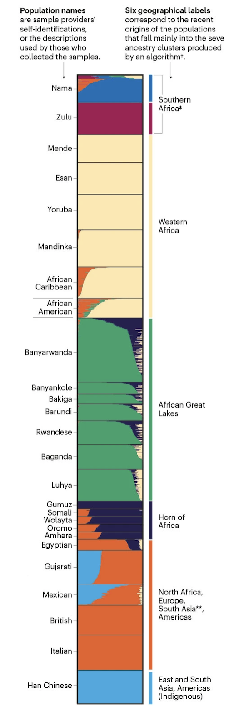
Human Genomic Variation
Genomics variation refers to DNA sequence differences among individuals within a population or when comparing different populations. Human genomic variation focuses specifically on variation within the human species. Some variants influence biological function (potentially causing disease), while others have no biological effects (“Genetics Glossary: Genomic Variation,” n.d.).
Ancestry
Ancestry is a personal understanding of one’s genomic heritage - a statement about a person’s relationship to other individuals in their genealogical history. Ancestry is often self-reported by an individual and is a personal concept focusing on the how or the process of their family history rather than a societal pattern (Yudell et al. 2016).
To explore these topics, we’ll first ask questions such as “What is the human genome?”, “What is genomic variation?”, and “Why should we care about human genomic variation?”. Data representing genomic variation and ancestry will be discussed and ways to represent or visualize this data will be highlighted. In addition, ways to work with data will be compared and contrasted, examining the pros and cons of techniques that either utilize more manual approaches or more processing through computational work. Since the data we will be working with is not large, we can use these techniques in any case.
What is the human genome?
The human (all of an individual’s ) is made of stretches of . The nucleotides ultimately encode for products that function in the body in important ways. Proteins include enzymes like amylase to break down food, peptide hormones such as insulin to regulate blood sugar, and structural proteins such as keratin in skin and nails. An individual’s genome encodes all the proteins they need for their body to function normally.
The Central Dogma is a theory describing how genetic information is stored and how it flows. DNA stores genetic information within the genome. DNA produces through a process called . Specific regions of the genome called are transcribed into RNA molecules. RNA produces proteins through a process called .

The human genome is diploid meaning that it has two copies of each of the 23 distinct (1, 2, 3, …, 21, 22, sex chromosome / X or Y) for a total of 46 chromosomes. The copies are not identical because they are inherited from different parents – one from each. These chromosomes are housed in the nucleus of the cell. Chromosomes have DNA wound around specialized proteins called histones forming dense coils to compactly store the genomic information. Some regions of the chromosome are more tightly wound than others. DNA replication and transcription occur in the loosely wound/more accessible regions (Pathak and Bordoni 2026).
Recent work from the T2T project (Nurk et al. 2022) completely sequenced the Human Genome and reported that
Note that the terms “nucleotide” and “base” are often used interchangeably since the base is a part of the nucleotide.
- it is 3.055 billion–base pairs or nucleotides in length.
- there are 63,494 genes in the human genome (only 19,969 of which code for proteins).
- 53.94% of the genome is made up of repetitive DNA.
Much of the human genome contains non-coding DNA instead of genes. This isn’t to say that the DNA in these non-coding regions is doing nothing. Structural elements such as telomeres (which protect the end of chromosomes) are part of the non-coding regions. Regulatory elements are part of these non-coding regions as well. While they are not included in eventual protein products, they regulate when and how much RNA is produced in transcription.
See the expandable section below for further resources to review the Central Dogma.
Further Resources for the Central Dogma
This Khan Academy lesson provides an overview of the Central Dogma as well as the transcription and translation processes (“Intro to Gene Expression (Central Dogma) (Article),” n.d.).
What is genomic variation?
Most of a person’s genome is the same as another person’s. All humans need the same proteins to function. But very small parts of our genome, especially in the areas that do not code for proteins, can vary across individuals. This genomic variation is caused by changes in the nucleotide sequences that can cause differences in how a protein functions or the amount of protein created. Some variations can change the function of a protein so severely that it stops doing its intended function, while others can increase or decrease the amount of protein that is produced.
These variations in a genome are caused by mutations. Mutations are any changes in the DNA or nucleotides that make up the genome.
Mutation is just a term for any change to the DNA. Not all mutations are deleterious or bad. Many have no impact at all and some can be beneficial.
These variations can be caused by a change of a single nucleotide (“point mutations”) or changes involving more than one nucleotide. An example of a single nucleotide change would be changing a base from C → T or adding or removing a single nucleotide (pronounced “snip”).

If a point mutation occurs fairly often within a population and is observed with a common frequency, it is termed a single-nucleotide polymorphism or SNP (pronounced “snip”).
Sometimes mutations involve more than one nucleotide. An example of a mutation involving more than one nucleotide would be if a chunk of DNA, like ACCGT, were to be repeated and become ACCGTACCGT (such changes with more than 50 nucleotides are called structural variants). Some large structural changes (like the Translocation shown in the figure below) may even occur across multiple chromosomes (inter-chromosomal) rather than being within a single chromosome (intra-chromosomal).

How do nucleotide changes happen?
Variation can be introduced into the genome through mutation or recombination during meiosis. Mutations may occur due to errors during the replication of genomic material during cell division, imperfect repair mechanisms not catching mistakes, environmental factors or mutagens that damage genomic material (e.g., high-energy radiation or certain chemicals or viruses), or spontaneous/random changes.
Mutations
Changes to the DNA that can either be a single nucleotide change, larger changes involving segments of nucleotides, or in some cases changes to other chemical modifications of the DNA that change how tightly it is wound. See this article for more information.
No matter the cause of mutation, not all variations will be passed on to offspring/children. Mutations may be somatic (occurring in cells that are not part of the reproductive system) or germline (occurring in cells that are part of the reproductive system). Germline mutations and meiotic recombination are examples of heritable variation that will be passed on to future generations.
Human genomes are large (over 3 billion nucleotide base pairs)! And most of the genome is identical when comparing two individuals or an individual to a reference genome. On average, if you compared the genomes of two individuals, there would be >99% matching between the two. This is often visualized with a dotplot where highly identical genomes will have a dense, diagonal line with some off-diagonal dots (or lines for larger variants like an insertion or duplication).

More details about dotplots
Besides comparing two human samples to each other, dotplots are also used to compare a human sample to a reference genome, reference genomes to each other, human samples or reference genomes to other species, or really any other species/sample comparison.
Comparisons for less related samples produce more complex dotplots that represent larger structural variants like the inversions in the following example.

Why should we care about human genomic variation?
Especially if there’s so much similarity, why should we care about human genomic variation? Not all variations or mutations have an impact. Some variations can be “functional” and lead to changes not just in the genome, but also in the proteins that are translated from the genetic material. However, not all variation is “functional”; some changes don’t impact the proteins that are translated from the genetic material. (See silent mutations below).
Functional changes, on the other hand, may impact how much of a protein is made, the protein structure, and therefore its eventual role in the cell, or where and when the protein is expressed due to changes in parts of the genome that help regulate gene transcription. Certain diseases may be caused or worsened by genetic variation. Cancer is a common example of this, where genes that control cell growth, division, or scheduled cell death are mutated, and their proteins do not function properly to control the cell cycle, leading to uncontrolled cell growth that develops into tumors.
For other diseases, a protein may not be expressed at the correct levels or the protein may be folded incorrectly because of its mutated structure, leading to inefficiencies in or the inability of the protein to perform its function(s). This is the case in the mutation that leads to sickle-cell anemia and changes in the hemoglobin protein. To protect against this, there are biological redundancies that act as a safety net. These create backup systems that can mitigate issues by compensating for or taking the place of nonfunctional components. But even with redundancies and safety nets, mutations can lead to small changes with major consequences.
Different types of (single-nucleotide) mutations
As mentioned earlier, there are a few different types of mutations. Single-nucleotide polymorphisms are single-base pair differences, while larger structural mutations change more than one nucleotide. Within the group of single-nucleotide mutations, there are different types that are defined based on the effect of the mutation.
Single-nucleotide changes
Different types of single-nucleotide mutations are defined based on the effect of the mutation.
- Silent mutations have an underlying nucleotide change, but the amino acid building blocks of the protein remain unchanged. Not only does the protein remain unchanged, but for a true “silent” mutation, there is no effect on the cell.
- Synonymous mutations: Synonymous mutations have an underlying nucleotide change, and the amino acid building blocks of the protein remain unchanged. They differ from silent mutations, however, because these have an impact on the cell.
- Missense mutations result in an amino acid substitution, which can impact protein structure and function.
- Some missense mutations are “conservative” where the amino acid substitution is switching one amino acid for another similar one with similar biochemical properties (e.g., size, charge, etc.).
- A “non-conservative” missense mutation switches an amino acid to one with dissimilar biochemical properties – this is likely to have a greater impact on protein structure and function than a conservative missense mutation.
- Nonsense mutations introduce an early stop codon, halting translation and producing a truncated, likely nonfunctional protein.
Single-nucleotide insertions or deletions (indels)
A single nucleotide insertion or deletion (AKA an “indel”) may introduce a frameshift mutation. Frameshift mutations often impact the structure and function of proteins because of the shifting of the reading frame during translation for all subsequent codons after the insertion or deletion.
| Mutation Type | Single Nucleotide Change | Amino Acid Change | Possible impact on cell due to change in protein abundance or structure |
|---|---|---|---|
| Silent | Substitution | No Impact | |
| Synonymous | Substitution | ✅ | |
| Missense | Substitution | ✅ | ✅ |
| Nonsense | Substitution | Truncation | Probably large impact due to likely non-functional protein |
| Frameshift | Addition or Loss | All following shift are changed | Likely large impact |
Silent mutations have an underlying base pair change (i.e., a C to an A), but the amino acid building blocks of the protein remain unchanged. Since these mutations do not change the encoded amino acid, they are called silent. However, these silent mutations may still impact how often a protein is produced because certain tRNA anticodons are less available or may take longer to process in translation; so while they code for the same amino acid, they may not be truly “silent” and may have an effect in the cell. Such mutations are called synonymous mutations.
Missense mutations result in an amino acid substitution, which can impact protein structure and function. The single nucleotide change altered the amino acid that was encoded by that segment of DNA. This causes a substitution in the amino acid encoded for in that part of the protein. Some missense mutations are “conservative” where the amino acid substitution is switching one amino acid for another similar one with similar biochemical properties (e.g., size, charge, etc.). A “non-conservative” missense mutation switches an amino acid to one with dissimilar biochemical properties - this is likely to have a greater impact on protein structure and function than a conservative missense mutation.
Nonsense mutations introduce an early stop codon - halting translation prematurely. A stop codon typically signals the end of a segment of RNA that encodes a protein, signaling the end of translation. An early stop codon will prematurely stop the production of the protein and result in a shorter (or truncated), often non-functional protein.
A single nucleotide insertion or deletion (also known as an “indel”), or an insertion or deletion that is a length not a multiple of three (which is the length of a codon), may introduce a frameshift mutation. Frameshift mutations often impact structure and function to a higher degree than missense mutations because these cause downstream impacts, shifting the reading frame during translation for all subsequent RNA codons. When genetic material is read to create a protein, it is read in three-nucleotide chunks – the reading frame. A shift in the reading frame can greatly impact how a protein is made.
Here you can see a video about what happens with an insertion at the DNA, mRNA, and amino acid level:
Why do genetic changes sometimes persist in populations?
Genetic variation is considered necessary for survival. Scientists hypothesize that species are under various selective pressures to adapt and retain genetic changes that allow them to survive and reproduce, especially when competing with other species (e.g., predators vs prey, virus-host interactions, etc.) Given this, heritable variation (e.g., recombination during meiosis or germline mutations that are passed from generation to generation) can be beneficial by allowing for the selection of advantageous traits for adaptation leading to better survival. In other words, evolution depends upon the random accidents and mistakes that are mutations being maintained within a population because the changes can be advantageous.
Every person alive inherited genomic material from two individuals, and each of those individuals inherited genomic material from two other individuals, continuing backwards through their family history. Each generation of people pass down genomic materials to the next. Since genomic material is what is passed down from ancestors, genomic material is what is compared when considering ancestry and studying how individuals are related. Individuals who are more closely related will share more genomic material in common than those who are more distantly related.
Additionally, the length of time is important because time is needed for genetic variation to accumulate. The longer the amount of time or number of generations between two individuals, the more genetic variation there will be. With more time and more generations between two individuals, the more opportunities there are for genetic variations to occur and accumulate. Ancestry is something that is determined and formed over time and through a process – the process of genetic material being passed down. Therefore ancestry is defined as a “process-based concept” of how someone is related to other individuals in their genealogical history. Ancestry is a biological concept that captures the process of genomic material being passed down from generation to generation. But ancestry can mean many different things. It can capture the closer relationships between individuals and their ancestors, as well as the deeper history of people or species over thousands and tens of thousands of years, as they migrated, mixed, and moved.
How can we describe or quantify ancestry?
Ancestry captures a process that occurs over time and generations. When talking about ancestry, it can be complicated to quantify it. One way to do this is to compare the genomic material shared between individuals.
When comparing genomic material between individuals, how similar or identical a sequence is between the two is a quantitative measure describing how much overlap or matching there is between the genomic material. Homology is a qualitative description constructed from the amount of similarity and suggests that the sequences or genomic material share a common ancestor. The idea is that if two sequences look similar, they must have come from the same ancestor and diverged relatively recently, since there are few genetic variations that have accumulated. Models used to compare sequences take into account the different kinds of mutations and how commonly they occur.
When thinking about ancestry, we often think about ancestral groups or populations instead of individuals (ex, what group or community an individual is related to or whether one group is related to another group or community). This also applies to studying similarities and differences in current groups based on their ancestry. For example, evaluating every human’s blood pressure on earth would be nearly impossible. It would be much more feasible to study a representative sample of the general population. To create this representative sample, we would need to have individuals who represent different subpopulations within the greater population in our sample or we risk missing important information. Making a representative reference sample is important to make sure the results apply to the general population, and not just the subpopulation that was studied.
To do this, individuals are often grouped based on their ancestry into populations. A population is defined as a group of randomly mating (diploid).Diploid individuals are those with two complete sets of chromosomes (one from each parent) – for example humans. Defining a population is rather subjective. Historically, a lack of migration due to physical boundaries (such as mountains or oceans) influenced population definitions. However, over time, with society overcoming such boundaries, populations that used to be separated have mixed, leading to admixture.
Admixture
Definition of Admixture
How do you group humans?
Because of the admixture that has been going on for multiple generations, how populations are partitioned into separate groups is subjective, with no definitive dividing line. An individual’s view of their own ancestry will determine what population they identify as. This adds a cultural, religions, and sometimes geographical element to what used to be a strictly biological concept. People can identify with a culture that is more dominant in their life (this can be around race, ethnicity, religion, etc.) as well as where they grew up, as opposed to where their ancestors are from.
NOTE: Reviewed/Edited background material has only been brought over through here so far
Additionally, the definition of populations may also differ in scale. As mentioned earlier, ancestry can mean relationships across a couple of generations or tens of thousands of years. The 1000 Genome Project was an international research effort that aimed to create the most detailed reference of human genetic variation available at that time. Populations and superpopulations used by the 1000 Genomes Project that are both examples of creating population-esque categorizations. Superpopulations combine populations together, creating fewer overall categories. These categorizations don’t have a single genetic or biological characteristic driving them, but rather are subjectively and arbitrarily defined groups. There are 26 ethnically or geographically defined groups in the 1000 Genomes Project. There are 5 superpopulations that are composite groups focusing on a broader continental definition - not based on an individual’s current location, but instead their genetic ancestry. Given the mixing of populations throughout time, there may not be a single clear categorization for an individual into one of these populations or superpopulations.
Can we use ancestry as a proxy in medical care?
What does this all mean?
Main Questions
Our main question:
- How can genomic data be used to explore the ancestry of an individual or population?
- How does the genetic makeup of different world populations compare?
- How can coding and computational biology/data science principles and tools help us investigate our questions?
Learning Objectives
Data Science Learning Objectives:
- Explain the differences and benefits of using R vs Google Sheets to work with data
- Describe how data can take different shapes: long and wide
- Recode data to change original values, using programming to reduce accidents and to document changes, rather than changing values manually
- Crease an ancestry plot (a special heatmap-like column plot that shows differences)
- Describe what different elements of the ancestry plot represent
- Combine two plots together
Statistical Learning Objectives:
- Explain how clustering can help identify groups
- Summarizing means within a dataset
Topical Learning Objectives:
- Describe how genomic data shows what human variation looks like
- Explain genetic similarities and differences between people
- Describe how racial and ancestry groups might differ
- Recognize the patterns of genetic variation across continents
We will begin by loading the packages that we will need:
library(here)
library(readr)
library(dplyr)
library(DT)
library(tidyverse)
library(ggplot2)
library(patchwork)
install.packages("ggforce", repos="https://cloud.r-project.org/")
library(ggforce) #for facet_col| Package | Use |
|---|---|
| here | to easily load and save data |
| readr | to import data files |
| dplyr | to manipulate data |
| tidyverse | to manipulate and visualize data |
| patchwork | to combine plots |
| ggforce | to extend the plotting capabilities of ggplot2 |
The first time we use a function, we will use the :: to indicate which package we are using. Unless we have overlapping function names, this is not necessary, but we will include it here to be informative about where the functions we will use come from.
Context
Provide some more details and background on the case study topic and its relation to public health/the world.
Limitations
What are the data?
The data for this case study comes from the authors (primarily Dana R. Al-Hindi) of a commentary (Carlson et al. 2022) which expands upon data and a previous analysis presented by a broader team (Li et al. 2008). Specifically, for the commentary analysis, a clustering tool (ADMIXTURE) (Alexander, Novembre, and Lange 2009), which also estimates ancestry proportions for each sample, was run on SNPs from ~1900 individuals without providing any prior ancestry information besides the number of clusters that the program should produce. The original analysis used a tool called frappe (Tang et al. 2005), specifying 7 clusters for the results, so the commentary analysis specified 7 clusters as well. The original analysis had 938 samples, 86.5% of which had reported ancestry outside of Africa, with the remaining 13.5% having reported ancestry from within Africa. To make the point that the proportion of categories within a sample will impact the end result, the commentary analysis inverted those numbers, using 85% of samples with reported ancestry within Africa and only 15% with reported ancestry outside of Africa. Though a different tool was used by the original analysis to cluster the samples, the tools are very similar in how they work, but ADMIXTURE is faster.
Ultimately they both calculate the proportion of an individual’s genetic ancestry that is from a predefined ancestry group. The number of clusters indicates the number of predefined ancestry groups. In this case they chose 7 groups to account for the genetic variation across all of their samples across the world to investigate.
| Original Analysis | Commentary Analysis | |
|---|---|---|
| Reference | Li et al. (2008) | Carlson et al. (2022) |
| Number of samples | 938 | 1918 |
| Number of populations | 51 | 26 |
| Reported ancestry outside of Africa | 86.5% | 15% |
| Reported ancestry within Africa | 13.5% | 85% |
| Clustering tool | frappe | ADMIXTURE |
| Number of clusters | 7 | 7 |
The data provided from the commentary analysis authors lists the reported ancestry/population group for each sample, as well as the resulting estimated proportion of ancestry for that sample for each of the 7 clusters.
The data includes 1913 rows and 9 columns with the following information:
- pop: A column about the population where a sample came from, with values like Egyptian or British.
- id: A column with ID numbers as a way of identifying a person’s genomic data. This includes data from 3 genomic data resources including the European Genome-phenome Archive (EGAN), the Human Genome Project (HG), and Coriell Institute for Medical Research (specifically under the National Institute of General Medical Sciences / NIGMS repository) indicated by NA for North America.So each row represents a genetic sample from an individual person. The letters at the beginning indicate what project the data came from.
- columns labeled k1-k7: These columns show the proportion of each persons genetic ancestry attributed to 7 divisions of variation.
If we take a look at a few individual rows of the table, which we will do in a moment, we will see that the proportions in the k columns add up to roughly 1 (there is some rounding in how the data is presented).
Clustering
Let’s take a minute to dive deeper into what these K columns mean.
Consider that you have a bag of Halloween candy. Perhaps you want to figure out a way to divide that candy into groups so that you vary the kind of candy you eat until you are out of candy. There are actually many ways you could divide the candy by different features. For example, you could divide it based on if it contains chocolate or has a fruit flavor, or you could divide it by texture, if it is crunchy or chewy, or perhaps you want to share with your Aunt who only likes candy that isn’t too sweet or with your cousin who really like sour candy. As you can see there are many ways in which we could group the candy.
In order to group people by ancestry, we can group them by their SNPs. As discussed SNP variants may have been introduced through mutation and then may have continued to persist in specific population or may have largely disappeared because of migration patterns. For example, if a population of a small number of people migrated to an isolated geographical location, any rarer SNPs may become more numerous among later generations that are decedent from these original settlers.
We can try to group people by evaluating which SNP variants co-occur or seem to distinguish different groups. Going back to our candy example, we might find that a cherry flavor often co-occurs with chewy textures. These two features could help us to group our candy. We may have some candy that has a cherry flavor that are not chewy, but the two features together may help to create the optimal number of groups that we are trying to achieve for our candy sharing and pacing problems. We can use math to help us identify a more optimal number of population groups based on our SNPs. Clustering algorithms help us to reduce the mathematical distances of individuals within our groups or in other words, find clusters that have more similar individuals and keep the clusters generally less overlapping. So the data that we have has identified that 7 clusters generally distinguishes the individuals into groups quite well. Since humans are quite genetically similar, allowing for individuals to overlap across the clusters is helpful. Therefore, as we will see an individual could have a portion of its SNPs overlap more closely with more than one cluster.
Data Import
Estimated ancestry proportions from programs like ADMIXTURE are stored in a Q-matrix or .Q file. The number of rows corresponds to the number of samples, while the number of columns represents the number of ancestry groups that the samples were clustered among. We can read in these estimated ancestry proportions using the read_table function from readr.
ancestry_props <- readr::read_table(here("data/raw/ancestry_props.Q"))Typical Q-matrix files
.Q files typically use a space as a delimiter separating different columns of data from each other.
Typically .Q files don’t container headers/column names because the population genetics software doesn’t expect/use column names. Therefore, if this were a typical .Q file, when reading in the data, we would need to ensure that we specify the names of the headers/column names so that the first row of data is included within the data itself, and not treated as a header. However, column names have been added to this file for you already.
Typical import might look like this:
ancestry_props <-
readr::read_table("FILENAME.Q",
col_names = c("pop",
"id",
paste0("k", 1:7)
)
)This code specifies that the column names should be “pop” for column 1, “id” for column 2, and “k1”, “k2”, “k3”, “k4”, …, “k7” for the remaining columns.
Let’s take a look at a few rows now. We can use the slice function to get the data for a single row. Say we want the 500th row we can do so like this:
slice(ancestry_props, 500) # A tibble: 1 × 9
pop id k1 k2 k3 k4 k5 k6 k7
<chr> <chr> <dbl> <dbl> <dbl> <dbl> <dbl> <dbl> <dbl>
1 Barundi EGAN00001163741 0.00001 0.00001 0.00001 0.00001 0.856 0.0882 0.0559We can see that most of the genomic variation appears to match up with cluster 3 and 5. these have the largest numbers, with k5 showing a much higher proportion that is pretty close to 1. Therefore most of the genetic variation of this individual is mostly attributable to the 5th cluster, or in other words, this person would fit pretty well with that group based on genetic variation, however, other individuals do not group as easily.
Let’s take a look at another row, let’s look at the 20th row.
slice(ancestry_props, 20) # A tibble: 1 × 9
pop id k1 k2 k3 k4 k5 k6 k7
<chr> <chr> <dbl> <dbl> <dbl> <dbl> <dbl> <dbl> <dbl>
1 Amhara EGAN00001044441 0.00001 0.00001 0.376 0.00001 0.00001 0.624 0.00001Now this individual groups more with 2 clusters, with .38 for k3, and .62 for K6. In this case this person doesn’t fit as well within an individual cluster, however, the proportion for each of these clusters, still allows us to identify their genetic variation relative to the other individuals. You can see that we could identify more ancestral groups than just 7 based on how much well an individual matches with these groups.
First, navigate to your Google Drive home and create a new Google Sheet.
- Click the
+ Newbutton in the top left. - Select
Google Sheetsfrom the dropdown list. - This will open a blank, “Untitled spreadsheet”.
- Rename the Google sheet something relevant like
Ancestry databy clicking the “Untitled spreadsheet” name in the top left, selecting the words, and replacing them with your new title.
Next, download the data file with estimated ancestry proportions for each sample with this link: https://github.com/opencasestudies/ocs-ripples-ancestry/raw/refs/heads/main/data/wrangled/ADMIXTURE_ancestry_props.txt
- Note that this file is named
ADMIXTURE_ancestry_props.txt. - Note where this file downloaded on your computer. (Is it in your
Downloadsfolder?) You will need to know in order to import it into Google Sheets
Import the data file that you’ve just downloaded to Google Sheets.
- Click the
Fileoption from the Google Sheets menu bar and selectImportfrom the dropdown menu. - In the
Import filewindow that pops open, select theUploadtab. - Click the blue “Browse” button.
- Find the
ADMIXTURE_ancestry_props.txtfile that you downloaded in the previous step, and select that to upload. - Leave the “Import location” as the “Replace spreadsheet” option.
- Switch the “Separator type” from “Detect automatically” to “Tab”.
- Ensure that the “Convert text to numbers, dates, and formulas” option is checked.
- Click the green “Import data” button on the bottom right of the window.
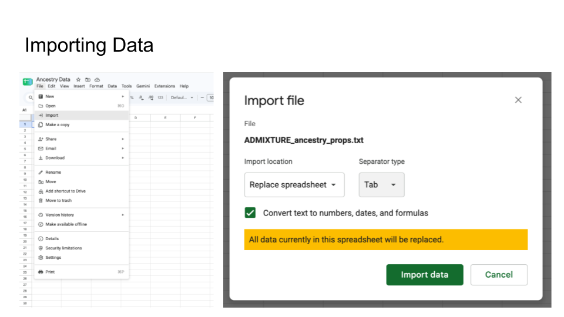
Data Wrangling
As a reminder our goal is to recreate the following figure:
We therefore, need to see if the data matches what we need to make this figure.
First let’s take a look at our data. In R we can do that by using the head function which shows us the top 6 lines of the data. Or we can click on the data from the Environment pane of R Studio if we are using R Studio.
head(ancestry_props)# A tibble: 6 × 9
pop id k1 k2 k3 k4 k5 k6 k7
<chr> <chr> <dbl> <dbl> <dbl> <dbl> <dbl> <dbl> <dbl>
1 Amhara EGAN00001044421 0.00001 0.00001 0.363 0.00001 0.00001 0.637 0.00001
2 Amhara EGAN00001044423 0.00001 0.00001 0.330 0.00001 0.00001 0.670 0.00001
3 Amhara EGAN00001044424 0.00001 0.00001 0.342 0.00001 0.00001 0.658 0.00001
4 Amhara EGAN00001044425 0.00001 0.00001 0.343 0.00001 0.00001 0.657 0.00001
5 Amhara EGAN00001044426 0.00001 0.00001 0.363 0.00001 0.00001 0.637 0.00001
6 Amhara EGAN00001044427 0.00001 0.00001 0.341 0.00001 0.00001 0.659 0.00001Let’s use the distinct function to check that we have all the distinct populations we expect.
distinct(ancestry_props, pop) # A tibble: 29 × 1
pop
<chr>
1 Amhara
2 Gumuz
3 Zulu
4 Oromo
5 Somali
6 Wolayta
7 Egyptians
8 Banyarwanda
9 Barundi
10 RwandeseUgandan
# ℹ 19 more rowsWe want the names of our populations to match that of the paper, we know from the authors what some of these abbreviations stand for and we can tell that some are just slightly different like Egyptians vs Egyptian. Here we will modify the pop column (also known as variable) to reflect the full name. To do this we need to use the mutate function to change the variable and we need the case_when function to help us recode those abbreviated values to the full name. We will also include a .default = pop statement so that anything we don’t specify stays as it was.
This is really powerful because instead of going in and replacing every value where these occurred by hand, we can do it very quickly in R and we have a record of how we changed the data.
ancestry_props <- ancestry_props %>%
dplyr::mutate(pop = case_when(
pop == "ACB" ~ "African Caribbean",
pop == "ASW" ~ "African American",
pop == "CHB" ~ "Han Chinese",
pop == "Egyptians" ~ "Egyptian",
pop == "ESN" ~ "Esan",
pop == "GBR" ~ "British",
pop == "GIH" ~ "Gujarati",
pop == "GWD" ~ "Mandinka",
pop == "LWK" ~ "Luhya",
pop == "MSL" ~ "Mende",
pop == "MXL" ~ "Mexican",
pop == "Nama/Khoe-San" ~ "Nama",
pop == "RwandeseUgandan" ~ "Rwandese",
pop == "uganda_gwas_unknown" ~ NA_character_,
pop == "Batooro" ~ NA_character_,
pop == "Nyanjiro(Tanzania)" ~ NA_character_,
pop == "TSI" ~ "Italian",
pop == "YRI" ~ "Yoruba",
.default = pop))We can check our work by using the distinct function again to see how unique values for pop we have now:
distinct(ancestry_props, pop)# A tibble: 27 × 1
pop
<chr>
1 Amhara
2 Gumuz
3 Zulu
4 Oromo
5 Somali
6 Wolayta
7 Egyptian
8 Banyarwanda
9 Barundi
10 Rwandese
# ℹ 17 more rowsNext, we want to make our data a class called factor because this allows us to order our data in a specific way. We can do so using the factor function and we can specify the order of our levels for the populations.
ancestry_props <- ancestry_props %>%
dplyr::mutate(pop = factor(pop,
levels = c("Nama", "Zulu", "Mende", "Esan", "Yoruba", "Mandinka", "African Caribbean", "African American", "Banyarwanda", "Banyankole", "Bakiga", "Barundi", "Rwandese", "Baganda", "Luhya", "Gumuz", "Somali", "Wolayta", "Oromo", "Amhara", "Egyptian", "Gujarati", "Mexican", "British", "Italian", "Han Chinese"))
) Next we want to remove rows where we had NA values. We would always want to be careful about what these mean and if we should remove them. In our case we can’t use them to recreate the plot, so we will drop them. Again this step could take quite a bit of time in Excel or Google Sheets (depending on how manually we did it) and we could accidentally remove rows that we don’t want to remove!
ancestry_props <- ancestry_props %>%
tidyr::drop_na() # dropping a few samples that had no data
ancestry_props_temp <- ancestry_propsNow let’s save our clean data using the write. table function.
write.table(ancestry_props, file = here("data/wrangled/ADMIXTURE_ancestry_props.Q"),
row.names = FALSE,
quote = FALSE,
sep = "\t")First let’s take a look at our data.
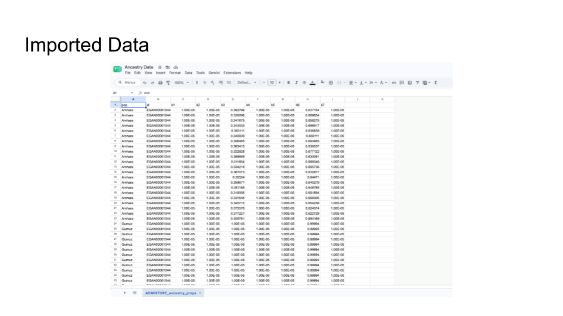
- In the first row, we see the column names
pop,id,k1,k2,k3,k4,k5,k6, andk7.- The labeled population is in column A
- The sample ID is in column B.
- The ancestry proportions are in columns C through I.
- By scrolling, we see that there are 1914 rows of data (including the header), meaning there is data for 1913 individuals.
- If you didn’t want to scroll to see how much data there is, you could enter
=COUNTA(A:A)into a spreadsheet cell off to the side and it would return the same number. TheCOUNTAfunction in Google sheets returns how many values are in a dataset, in this case the A column.
- If you didn’t want to scroll to see how much data there is, you could enter
Using Google Sheets, to work with data instead of just visually inspecting it requires the use of menu tools or using formulas. Formulas may be more difficult to actually implement and read / understand what they are doing, but formulas are more reproducible for others and yourself who are reviewing your work. Reproducibility is the idea that someone can recreate our work and tell exactly what we did. Using menu tools is not reproducible given there is no record of what was done and when it was done. =COUNTA(A:A) is an example of a Google Sheets formula.
How to build a formula for Google Sheets
Add some basic tips about writing Google Sheets Formulas
- Uses functions
- Starts with
= - Can be all uppercase or all lowercase
- Takes ‘arguments’ or ‘parameters’
- How to write a range
- How to reference a range in a different sheet
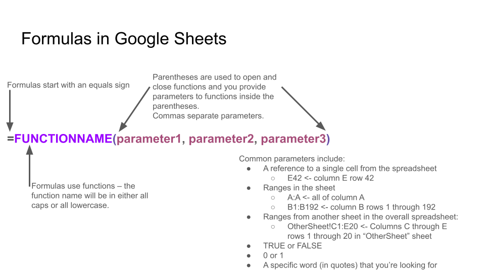
- Can be nested (but only one
=)
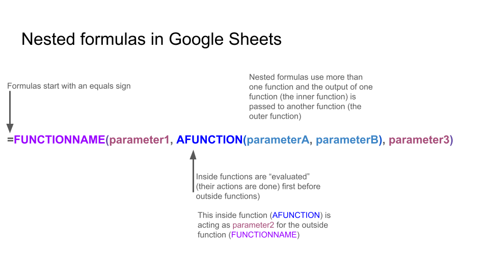
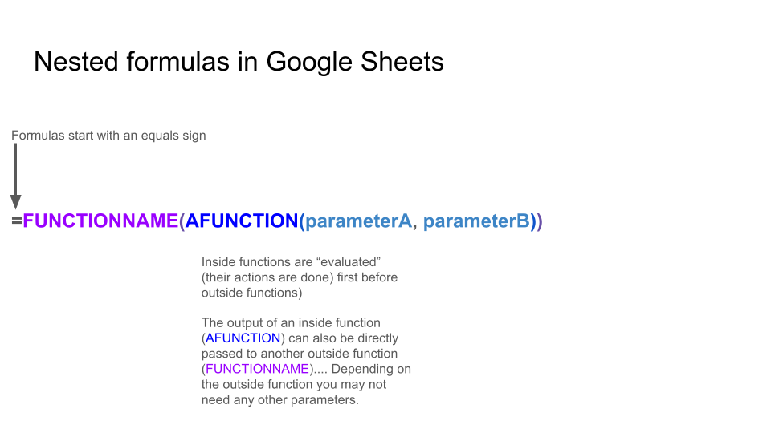
- To see the unique population names in the
popcolumn, in another spreadsheet cell off to side, enter=UNIQUE(A:A)and it will list the unique population names in that column.
How would you change the =UNIQUE(A:A) function to show the number of unique populations in the dataset?
Hint
You can put a spreadsheet function inside another spreadsheet function. The function on the outside (the outer function), will be used or evaluated after the function on the inside.
Answer
Use =COUNTA(UNIQUE(A:A)) and that will return the number of unique populations within that column + 1 because it is also counting the pop header as a unique value in the A column.
The wrangling steps that are being performed in the R version of this case study have already been done for the dataset that was imported into Google Sheets. However, we will discuss the options you have for performing those sorts of wrangling steps in Google Sheets.
If you want to try any of the suggestions here just to play around with the concepts, click the downward facing arrow next to the Google Sheet name ADMIXTURE_ancestry_props on the bottom banner and click “Duplicate”. You can treat the new “Copy of ADMIXTURE_ancestry_props” like a sandbox where you can test some of the data wrangling capabilities of Google Sheets.
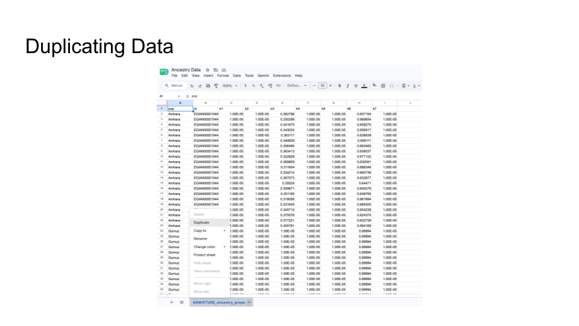
The ultimate goal is to recreate the figure from this motivating Nature Commentary. Some of the skills that can be practiced in this section will be useful for that goal when building the Data Visualization in the next section of the Case Study.
Mutating or Substituting Values
If you needed to “mutate” values in a spreadsheet (in other words, switching out a value / specific pattern that is in the sheet with another value or specific pattern), you could use a combination of spreadsheet functions that enact the “substitute” function for the column and multiple substitutions (but this will not perform an in-place substitution), or you can use the built-in “Find and replace” (from the Edit menu) functionality of Google Sheets. The former is complex, both to build and understand, but more reproducible for other people to see what was done. The latter is much easier to implement, but would have to be repeated manually for every needed substitution, and is not reproducible / a set of formulas that you or others can reference / review later.
First, the method using the substitute function:
=SUBSTITUTE(text_to_search, search_for, replace_with)searches a specific Google Sheet cell or range of cells (text_to_search) for a specific value or text pattern (search_for) that it will then replace (replace_with). While it can search a range, unless combined with=ARRAYFORMULA()or used multiple times, it will only make a replacement for one cell using “implicit intersection” (e.g., by looking at the row in thetext_to_searchrange that intersects with the row where the=SUBSTITUTEcall is).=ARRAYFORMULA(SUBSTITUTE(text_to_search, search_for, replace_with))will make replacements for the wholetext_to_searchrange.- Combining several more functions allows you to make multiple substitutions across a range of data.
Instructions for trying SUBSTITUTE for a single substitution:
- In the
COPY of ADMIXTURE_ancestry_propssheet, click the down arrow next to the “A” for the “A” column and select"+ Insert 1 column right".
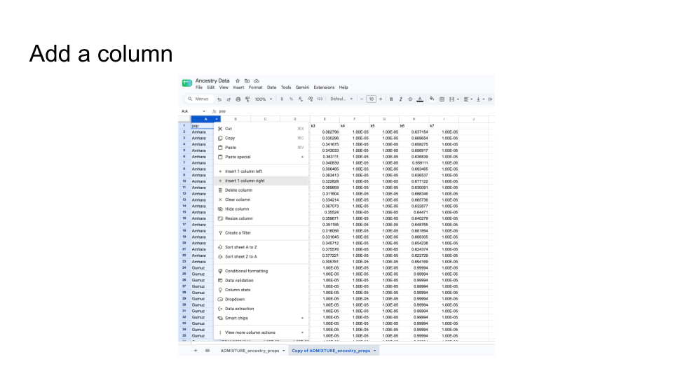
- Enter
=SUBSTITUTE(A1:A1914, "pop", "Test")in B1 and B4. (If after entering the formula in B1, it suggests you may want to autofill the rest of the column, you can reject that suggestion.)
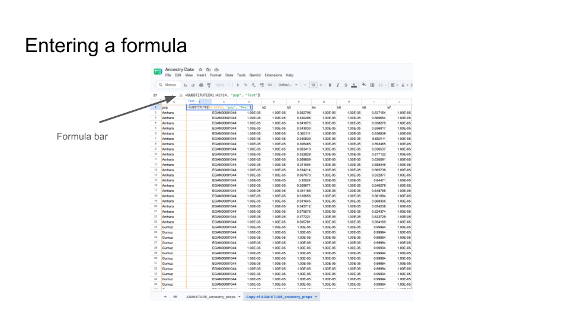
- Notice that B1 shows
"Test"(because A1 has the value “pop”), and B4 shows"Amhara"(because A4 does not have the value “pop”). The rest of the cells in the B column are blank. - Enter
=SUBSTITUTE(A1:A1914, "Zulu", "Test")in B5 and B50. - Notice that B5 shows
"Amhara"(because A5 does not have the value “Zulu”), and B50 shows"Test"(because A50 has the value “Zulu”). The rest of the cells in the B column (besides B1 and B4) are blank. - Enter
=SUBSTITUTE(A1:A1914, "Amh", "test")in B3. - Notice that B3 shows
testara(because A3 has the value"Amhara") and substitute replaces theAmhpart with `test’.
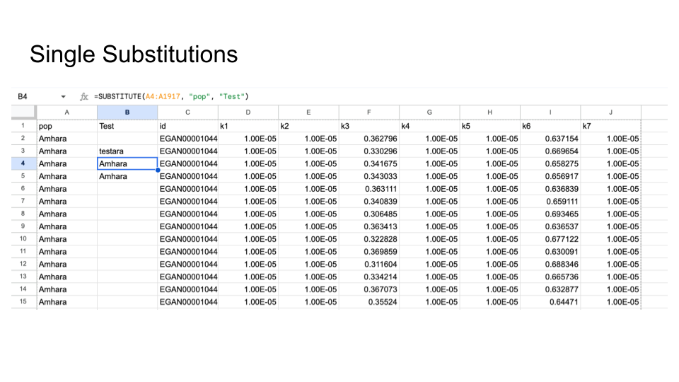
Instructions for trying ARRAYFORMULA & SUBSTITUTE for a single substitution:
- In the
Copy of ADMIXTURE_ancestry_propssheet, click the down arrow next to the “A” for the “A” column and select"+ Insert 1 column right". - Enter
=ARRAYFORMULA(SUBSTITUTE(A1:A1914, "pop", "Test"))in B1. - Notice that column B autofills, copying column A except for the first value which changes from
"pop"to"Test". - Click cell B1 and edit the formula in the formula bar, switching
"pop"to"Amhara"and press enter / return. - Notice that the column now switches
"Test"back to"pop"in the first row, and every occurrence of"Amhara"switches to"Test".
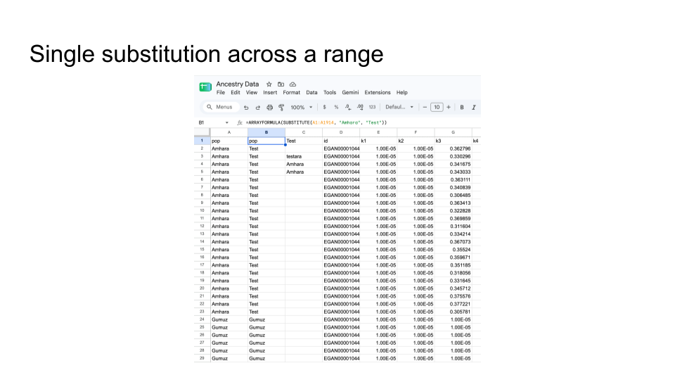
Instructions for combining several more functions allows you to make multiple substitutions across a range of data:
- Click the
+(Add Sheet) button on the bottom left of the Google Sheet. - Name the new sheet “Pop Index”.
- Set up some test substitutions in the new “Pop Index” sheet.
- In Column A enter:
- “African Caribbean” in A1
- “Han Chinese” in A2
- “Egyptian” in A3
- “Esan” in A4
- “Amh” in A5
- In Column B enter:
- “ACB” in B1
- “CHB” in B2
- “Egyptians” in B3
- “ESN” in B4
- “test” in B5
- In Column A enter:
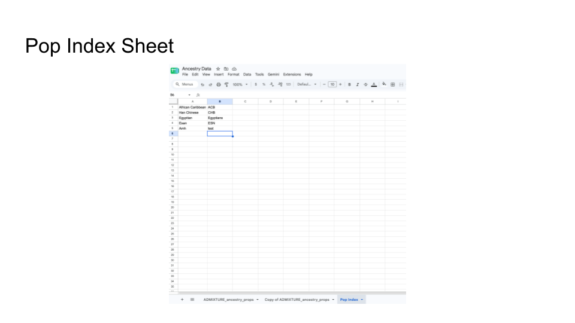
- Navigate back to the sheet “Copy of ADMIXTURE_ancestry_props”.
- Click the down arrow next to the “A” for the “A” column and select
"+ Insert 1 column right". - Copy the following nested formula, double click in B1 (so that the cursor is in the formula bar), paste the nested formula, and press enter / return.
=ARRAYFORMULA(REDUCE(A1:A1914,
SEQUENCE(ROWS('Pop Index'!A1:A5)),
LAMBDA(current_list,
row_num,
SUBSTITUTE(current_list,
INDEX('Pop Index'!A1:A5, row_num),
INDEX('Pop Index'!B1:B5, row_num)
)
)
)
)This formula uses a lookup table (what we entered in the Pop Index Sheet) to search a range of data step by step and make substitutions. The REDUCE function is used to update the range of data (in the A column, A1:A1914 - this will be all of the rows) for each step through the lookup table – the steps through the lookup table are defined using the SEQUENCE and ROWS functions. So for each row of the lookup table, this function goes through all of the values in the range and substitutes the current value in the cell with the one from the lookup table (column B) if the current value if the search string (column A in the lookup table) is found within the cell. By wrapping this whole thing in ARRAYFORMULA, the looping action works, making substitutions across the whole column rather than just a single cell.
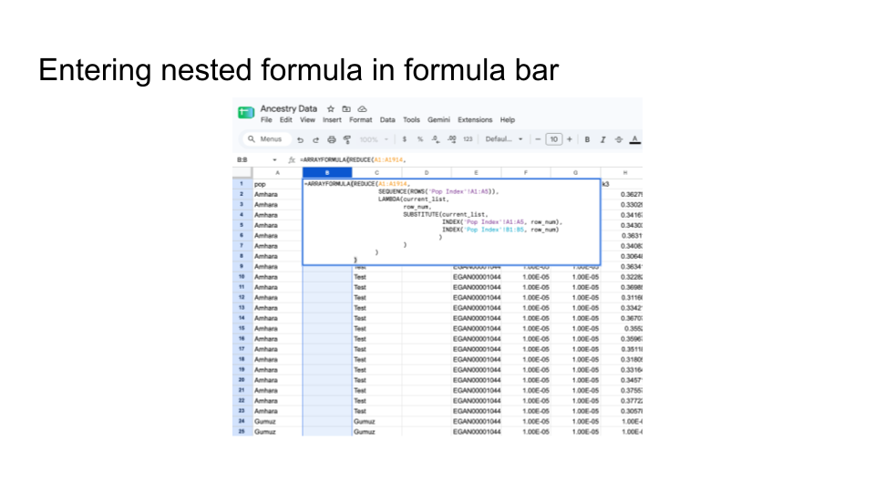
- Scroll the “COPY of ADMIXTURE_ancestry_props” sheet comparing column A to column B and see that your substitutions (column B in Pop Index) are in column B here when the search criteria from column A in Pop Index is in column A here.
Second, using Find and replace from the Edit menu:
- Try it out in your
COPY of ADMIXTURE_ancestry_propssheet and see how the manual process is. Note that there’s not a record of any changes it makes, while at least with the formulas above other people can look at the formulas after the fact. If you tried to record what you did manually, it would take time and you could easily miss writing down a step.
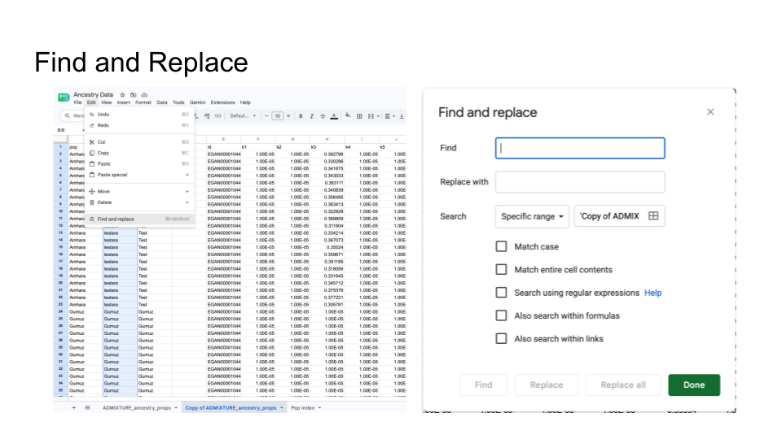
Mutating or substituting values was important for changing the appearance of the population labels when working with the data in R.
Filtering out values
If you needed to filter out rows, you can again use a formula. The FILTER function takes a range of data to copy (and filter while copying). Any parameters after that specify the conditions to evaluate to decide if a row of data is included or filtered out in the copy. So specifying something like A:A = "Value" will copy the data for rows where the A column has the value “Value”.
- Click the
+(Add Sheet) button on the bottom left of the Google Sheet. - Name the new sheet “Testing Filter 1”.
- In A1 of the new sheet
Testing Filter 1, enter the following formula that is specifying to filter the range to only include rows where thepopcolumn is equal to (=) “Amhara”:
=FILTER(ADMIXTURE_ancestry_props!A1:I1914, ADMIXTURE_ancestry_props!A1:A1914 = "Amhara")- Note that the headers are not brought over in this example because A1 does not equal “Amhara”.
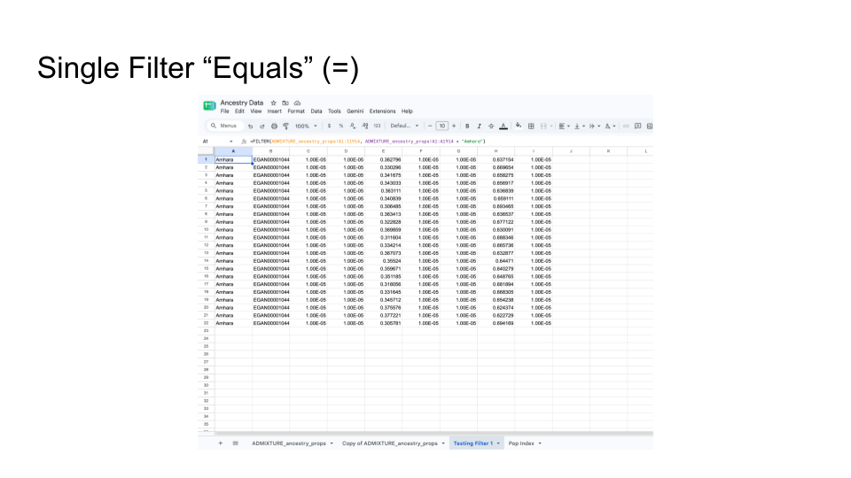
- Click the
+(Add Sheet) button on the bottom left of the Google Sheet. - Name the new sheet “Testing Filter 2”.
- In A1 of the new sheet
Testing Filter 2, enter the following formula that is specifying to filter the range to only include rows where thepopcolumn is not equal to (<>) “Amhara”:
=FILTER(ADMIXTURE_ancestry_props!A1:I1914, ADMIXTURE_ancestry_props!A1:A1914 <> "Amhara")- Note that the headers are brought over in this example because the A1 value does not equal “Amhara”.
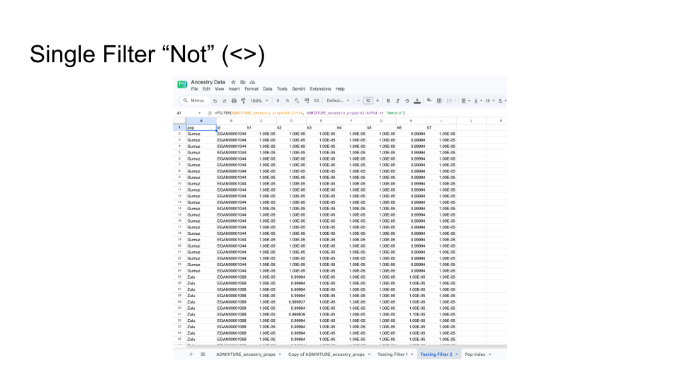
- Click the
+(Add Sheet) button on the bottom left of the Google Sheet. - Name the new sheet “Testing Filter 3”.
- In A1 of the new sheet
Testing Filter 3, enter the following formula that is specifying to filter the range to only include rows where thepopcolumn is not (<>) “Amhara” and not “Zulu”. The comma between the two conditions (not Amhara and not Zulu) acts as an “and” telling the function to evaluate both conditions when grabbing the data. (We could add more conditions separating them with commas and all of them would be enforced.):
=FILTER(ADMIXTURE_ancestry_props!A1:I1914, ADMIXTURE_ancestry_props!A1:A1914 <> "Amhara", ADMIXTURE_ancestry_props!A1:A1914 <> "Zulu")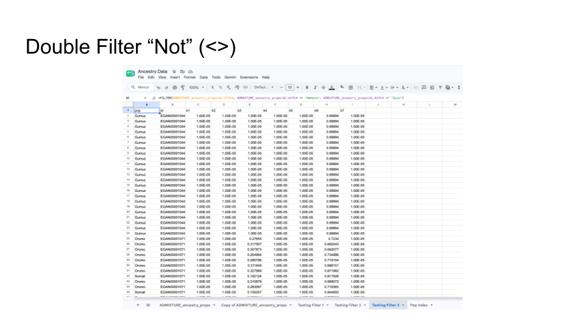
Filtering out values was necessary for removing NAs when working with the data in R. Specifically in R, we were removing a few samples that weren’t included in the original plot and we had recoded those sample populations to be NA. The data for these Google Sheets activities have already removed those populations.
However, using this filtering function will be useful within the Data Visualization section later on.
Ordering or Sorting
If you needed to order or sort values in a dataset, Google Sheets provides the built-in functionality of a menu tool as well as a function for formulas.
First, using the SORT function:
This function’s parameters include a range of data (which will be sorted), the column that should be used to sort the data, and whether to use Ascending (TRUE) sort or Descending (FALSE) sort.
- Click the
+(Add Sheet) button on the bottom left of the Google Sheet. - Name the new sheet “Testing Sort 1”.
- In A1 of the new sheet
Testing Sort 1, enter the following formula that is specifying to grab all of the original data (minus the column names because it’s starting at row 2) and sort based off of the population names with an Ascending sort (A –> Z)
=SORT(ADMIXTURE_ancestry_props!A2:I1914, ADMIXTURE_ancestry_props!A2:A1914, TRUE)- Notice that “African American” sample “NA19625” is listed first.
- Edit the formula to switch the TRUE to FALSE (descending sort Z –> A).
- Notice that the “Zulu” sample “EGAN00001068937” is now listed first and the estimated proportions of ancestry changed too, so the whole dataset is being sorted based on the population.
If you wanted to add the column names:
- Right click the “1” for row 1.
- Select “+ Insert 1 row above”.
- Enter column header names in the new row.
Why wouldn’t we bring the column header names over in the sort function automatically?
Hint
Google Sheets doesn’t know that the column names aren’t regular data.
Answer
The “pop” column name would have been sorted along with the rest of the data and wouldn’t have been the first row instead appearing in between the “Oromo” and “Rwandese” samples.
Second, using the built-in Sort functionality / menu tool:
- In the
COPY of ADMIXTURE_ancestry_propssheet, click the “View” menu option, followed by “Freeze”, and “1 row”. - Click the “A” for the A column. This will select the whole column.
- Click the “Data” menu option, followed by “Sort sheet”, and “Sort sheet by column A (A to Z)”.
- Notice that again “African American” sample “NA19625” is listed first in row 2. Because we “froze” the column name row (row 1), those rows are not impacted by the sort.
Note that while the built-in sort functionality is easier to use, it is not as reproducible as the formula because you and others can’t review exactly what was done.
What if you didn’t want to sort alphabetically and instead wanted to use a specific ordering?
- Click the
+(Add Sheet) button on the bottom left of the Google Sheet. - Name the new sheet “Testing Sort 2”.
- In A1 of the new sheet
Testing Sort 2, paste the following order of populations:
Nama
Zulu
Mende
Esan
Yoruba
Mandinka
African Caribbean
African American
Banyarwanda
Banyankole
Bakiga
Barundi
Rwandese
Baganda
Luhya
Gumuz
Somali
Wolayta
Oromo
Amhara
Egyptian
Gujarati
Mexican
British
Italian
Han Chinese- In C2 of the new sheet
Testing Sort 2, paste the following formula:
=SORT(ADMIXTURE_ancestry_props!A2:I1914, MATCH(ADMIXTURE_ancestry_props!A2:A1914, A1:A26, 0), TRUE)The addition of the MATCH function to this formula finds the order of the populations in the original dataset according to the order they appear in the A column in the new sheet, looking for exact matches (0) and uses that to sort the whole of the original dataset.
If you scroll, you’ll see that the populations are now in the specified order. You will need to bring the column names over for the data.
Ordering or sorting data was valuable for making the populations appear in the order we wanted for the plot in R, and this specific example in Testing Sort 2 will be useful in building the plot in the next section of the Case Study.
Wide to Long Transformation
Unlike in R, Google Sheets uses data from a wide format when making graphs, so transforming wide data to long data is not necessary for the data visualization steps of this case study.
How would you transform data from wide to long format in Google Sheets
If you needed to rearrange or transform the data from a wide format to a long format, this blog post explains a method to do that.
- Click the
+(Add Sheet) button on the bottom left of the Google Sheet. - Name the new sheet “Longer Data”.
- Copy the following nested formula, double click in A1 of the new sheet (so that the cursor is in the formula bar), paste the nested formula, and press enter / return.
=ARRAYFORMULA(SPLIT(FLATTEN(ADMIXTURE_ancestry_props!B2:ADMIXTURE_ancestry_props!B1914&","
&ADMIXTURE_ancestry_props!A2:ADMIXTURE_ancestry_props!A1914&","
&ADMIXTURE_ancestry_props!C1:ADMIXTURE_ancestry_props!I1&","
&ADMIXTURE_ancestry_props!C2:ADMIXTURE_ancestry_props!I1914
),
",")
)This formula works by first concatenating data by putting ampersands (&) after and before data to be joined. The actual “character” coming in between the concatenated data is in quotes so a comma (,). First, the sample ID is joined with the population label which is then joined with the column names for the ancestry proportions, and then finally the ancestry proportions are concatenated. The FLATTEN function collapses the resulting combined strings into a single vertical column. The SPLIT function then splits the concatenated data at the character that separates the various parts of the data (the comma). As before the ARRAYFORMULA function allows this process to work for the whole dataset rather than one value.
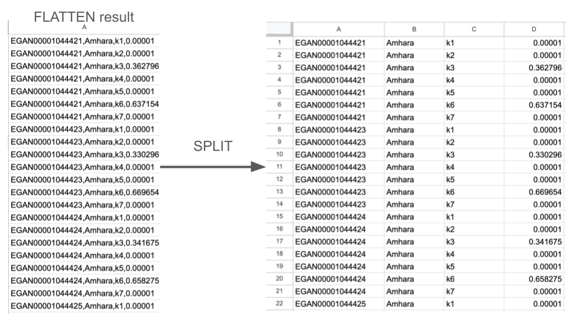
After the FLATTEN part of the formula, for each sample, there will be 7 rows of 1 column data instead of 7 columns of 1 row of data. The ID and population part of the data will be the same for all 7 rows, but the ancestry proportion label (k1, etc.) will be different for all 7 rows. The corresponding estimated ancestry proportion (a decimal number) will not necessarily be the same for all 7 rows (though some may have the same numbers when compared to each other).
After the SPLIT part of the formula, for each sample, there will be 7 rows of 4 column data with the ID, population, ancestry proportion label (k1, etc.), and estimated ancestry proportion all being in their own columns.
The column names were not brought over. If you wanted to add them:
- Right click the “1” for row 1.
- Select “+ Insert 1 row above”.
- Enter column header names in the new row.
Data Visualization
As a reminder our goal is to recreate the following figure:
If you have been following along but stopped, we could load our wrangled data like so:
load(here::here("data", "wrangled", "ADMIXTURE_ancestry_props.Q"))To visualize our data, we will first need to make it into a form called long form.
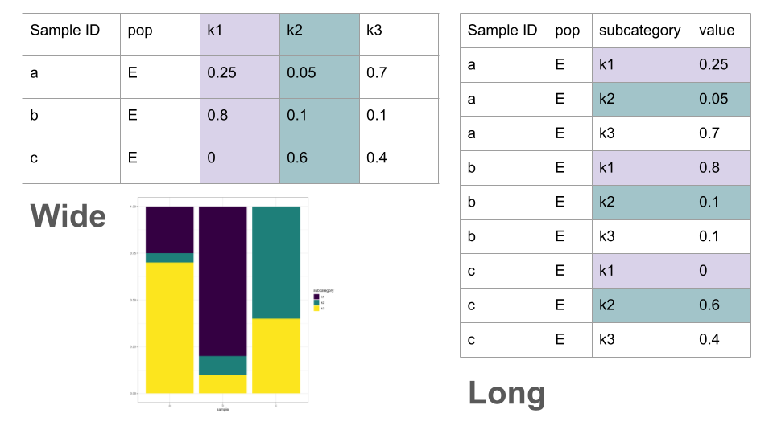
In the example above, each sample originally had a single row for its data with different columns having different k proportions. Rows summed to 1. However, looking at the same data transformed to be long form, each sample now has multiple rows with only one column having proportions, but the corresponding value in the “subcategory” column telling you which k proportion that is.
This long form will allow us to work with all of the k columns at once. To do so we will use a function called pivot_longer. e need to specify what columns to pivot and what to name the new column where the values will go and what to name the column were the original column names will be used as values.
ancestry_long <- ancestry_props %>%
pivot_longer(cols = starts_with("k"), values_to = "prop", names_to = "which_k")Let’s check our work with head again.
head(ancestry_long)# A tibble: 6 × 4
pop id which_k prop
<fct> <chr> <chr> <dbl>
1 Amhara EGAN00001044421 k1 0.00001
2 Amhara EGAN00001044421 k2 0.00001
3 Amhara EGAN00001044421 k3 0.363
4 Amhara EGAN00001044421 k4 0.00001
5 Amhara EGAN00001044421 k5 0.00001
6 Amhara EGAN00001044421 k6 0.637 Nice now we have all our k values in one column and another column indicating what k it came from.
Now we will use this to make a plot like the one in the paper. We will use the ggplot function of the ggplot2 package. This is famous R package for making visualizations. First we need to specify our aesthetics with the aes function to indicate what data will be on what axis and how we might color or group our data. In our case we want id(which is the gene name) on the y axis, prop on the x axis and we want to color by what k it came from (which_k).
We will create a bar plot so we need to specify that with the geom_bar function. We need to tell R to plot the raw values of y, and we can do that using the stat = "identity" argument. Otherwise, it would count the number of rows for unique values in x.
ancestry_long %>%
ggplot(aes(y=id,
x=prop,
fill = factor(which_k)))+
geom_bar(stat = "identity") 
OK not bad! We have made a plot that kinda looks like what we are trying to recreate pretty fast. However, we can do better. We have some white lines between our rows of data on the plot. Our y axis isn’t readable and we have different colors than the original plot.
OK first let’s try to tackle those white lines. If we add an argument of width = 1 to our geom_bar() function. this allows all the bars to touch each other with no space between, in other words they take up the full space (up to 1). We can see how this looks compared to a plot with a smaller width argument.
First let’s try a much smaller width of .1. Here we can see that this makes a large amount of gray or white space between all the groups.
ancestry_long %>%
ggplot(aes(y=id,
x=prop,
fill = factor(which_k))) +
geom_bar(stat = "identity", width = .1) 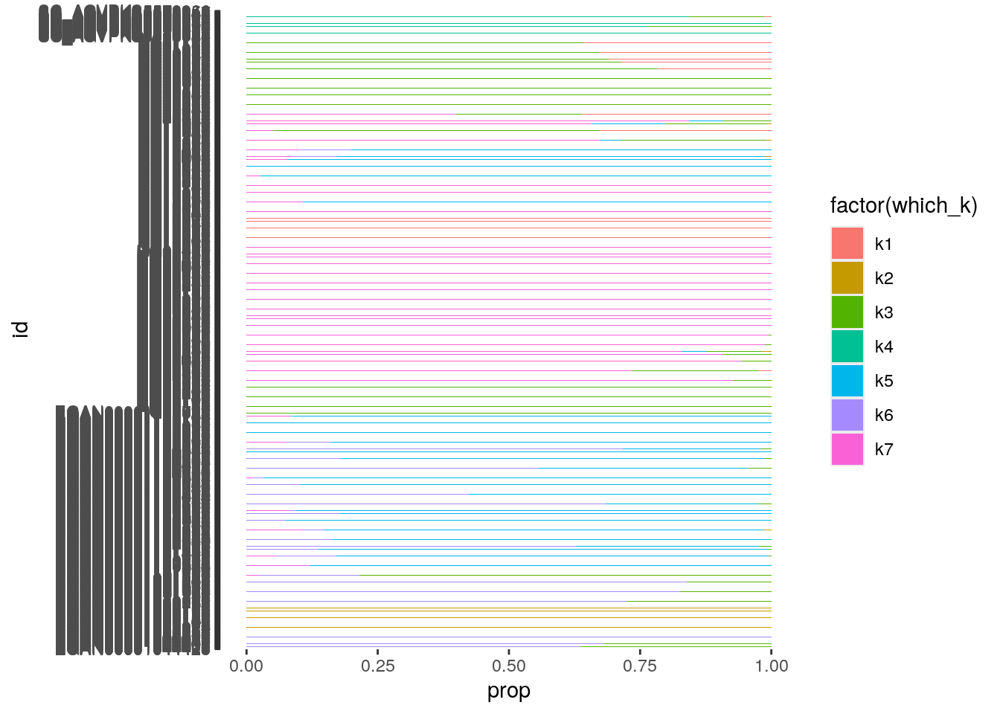
Now we will use width of 1.
ancestry_long %>%
ggplot(aes(y=id,
x=prop,
fill = factor(which_k))) +
geom_bar(stat = "identity", width = 1) 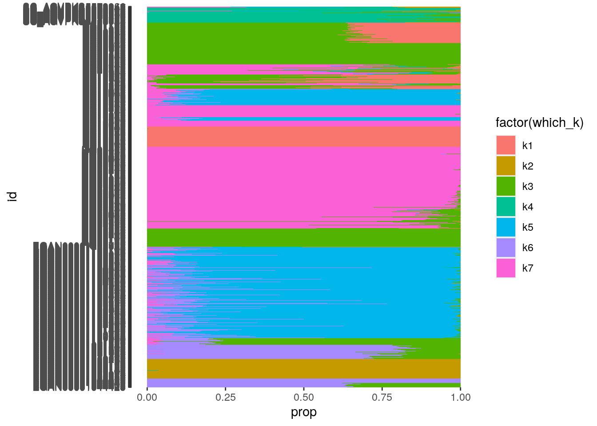
Nice, that is looking more like the plot we are aiming for.
Ok now let’s try to tackle that y axis - it is basically impossible to see what is happening right now. Let’s try filtering our data first to just one population to make sure we are seeing what we expect and then we will clean it up. We can use the filter() function to filter our data. We need to specify that we are looking for a specific string value such as “Amhara” for the rows of the pop column. There fore we can use filter(pop == "Amhara"). We need a double equal sign to tell R that we need a value exactly equal to the string. A single equal sign is often to indicate values for arguments like when we used width = 1, so when R need to know about a condition of equaling a value we need two equal signs.
ancestry_long %>% filter(pop == "Amhara" ) %>%
ggplot(aes(y=id,
x=prop,
fill = factor(which_k))) +
geom_bar(stat = "identity", width = 1) 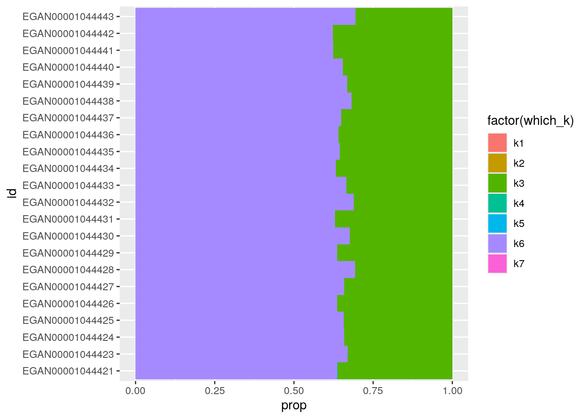
We can see from this that the y-axis is value for the id column. We would instead like to have a label for the population.
Let’s stick with filtering to just this one population so we can really see what is happening. Let’s remove the ID label and then we can add a label for the full population. To remove the current y axis, we can use the theme() function and use the axis.text.y = element_blank() argument to remove the values. This is a bit of a more complicated function. It has some specific requirements for how it is used, but it can change the look of nearly every aspect of a plot. See the documentation for this function to learn more. Basically, it can take many different options as things to modify, such as axis.text.y, which indicates that we want to modify the text of the y axis and element_blank() is used to remove it. We can also remove our legend for the clusters as we don’t have that in the plot we are trying to replicate. We can use legend.position = "none" for that. This may seem a bit tricky but programmers and scientists would look up what the documentation suggests to know how to do this.
ancestry_long %>% filter(pop == "Amhara") %>%
ggplot(aes(y=id,
x=prop,
fill = factor(which_k))) +
geom_bar(stat = "identity", width = 1) +
theme(axis.text.y = element_blank(),
legend.position = "none") We still seem to have tick marks so let’s get rid of those. We can use axis.ticks = element_blank() to do so, similar to how we removed the y axis text.
ancestry_long %>% filter(pop == "Amhara") %>%
ggplot(aes(y=id,
x=prop,
fill = factor(which_k))) +
geom_bar(stat = "identity", width = 1) +
theme(axis.text.y = element_blank(),
axis.ticks = element_blank(),
legend.position = "none") 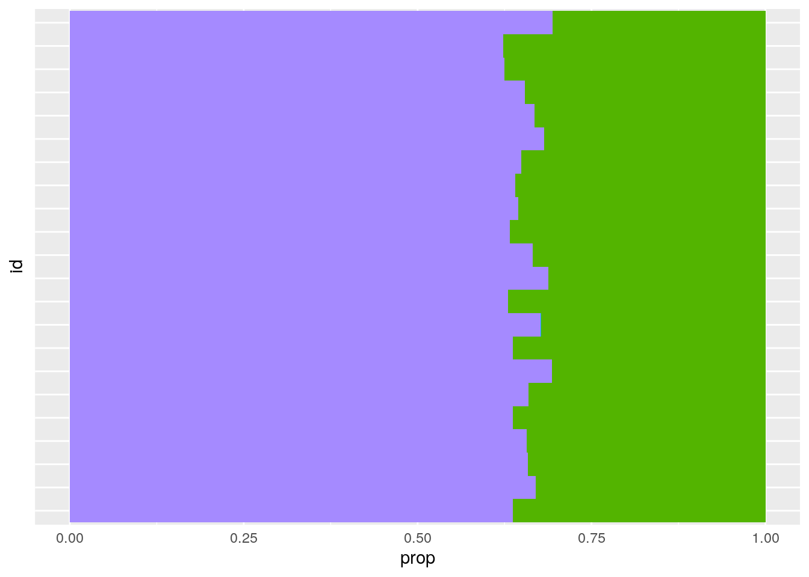
Notice how it still says “id” on the left? This is the y axis label. We can remove that by renaming it to nothing by adding ylab = "". Notice that there is nothing between the quotes here.
ancestry_long %>% filter(pop == "Amhara") %>%
ggplot(aes(y=id,
x=prop,
fill = factor(which_k))) +
geom_bar(stat = "identity", width = 1) +
theme(axis.text.y = element_blank(),
axis.ticks = element_blank(),
legend.position = "none") +
ylab("")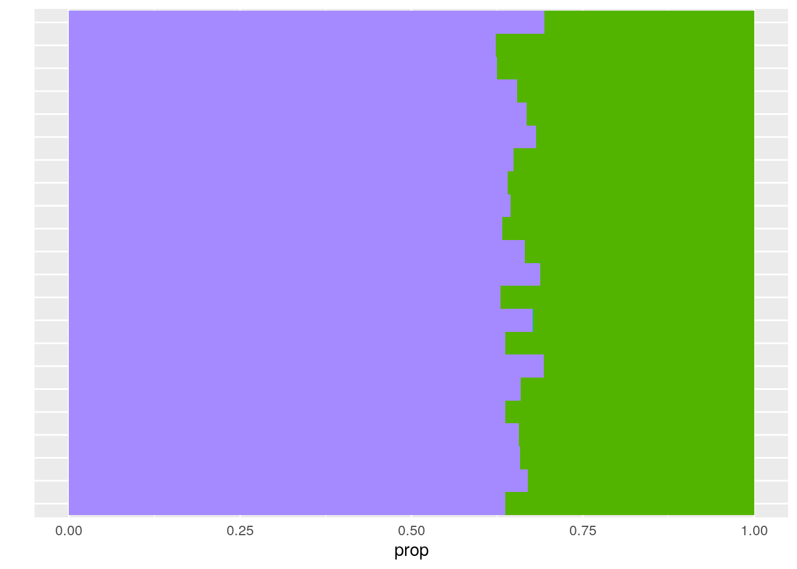
Nice! We are getting there. Now let’s add the label for the population. This is a bit of an advanced method, but we can do so making something called a facet column using the facet_col function of the ggforce package. We need to specify what column we want to use, we know we want the pop column since we want to have our populations listed. We use a tilde or ~ to indicate what to use. Then we need to tell where we want this to be listed and to match the plot we are aiming for, we should use the left. We can use strip.position = "left" to do so (otherwise it will be at the top by default).
ancestry_long %>% filter(pop == "Amhara") %>%
ggplot(aes(y=id,
x=prop,
fill = factor(which_k))) +
geom_bar(stat = "identity", width = 1) +
theme(axis.text.y = element_blank(),
axis.ticks = element_blank(),
legend.position = "none") +
ylab("") +
facet_col(~pop,
strip.position = "left")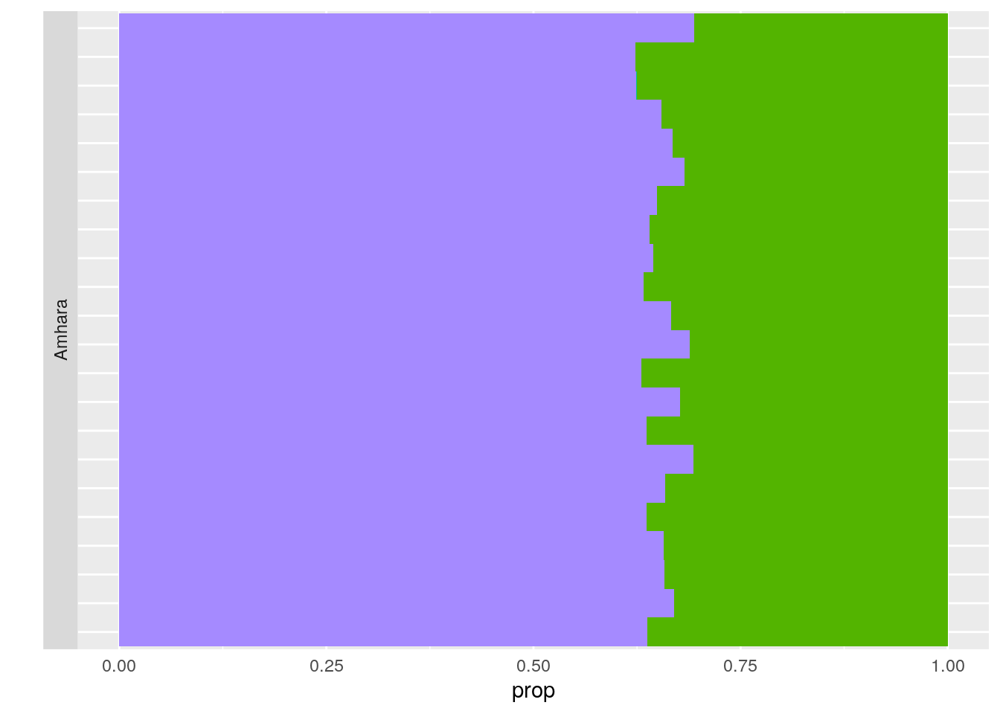
Nice! This is really starting to look good. One final thing we could do is rotate the text so that it isn’t vertical to match the Nature Commentary figure. We could also get rid of the gray background. To do so we, we need to add a couple of arguments to the theme function. We can use the strip.text.y.left function to do this and we specify that we want the angle of the text to be zero using element_text(angle = 0). To remove the background we can use strip.background = "none".
ancestry_long %>% filter(pop == "Amhara") %>%
ggplot(aes(y=id,
x=prop,
fill = factor(which_k))) +
geom_bar(stat = "identity", width = 1) +
theme(axis.text.y = element_blank(),
legend.position = "none",
axis.ticks = element_blank(),
strip.text.y.left = element_text(angle = 0),
strip.background = element_blank()) +
ylab("") +
facet_col(~pop,
strip.position = "left")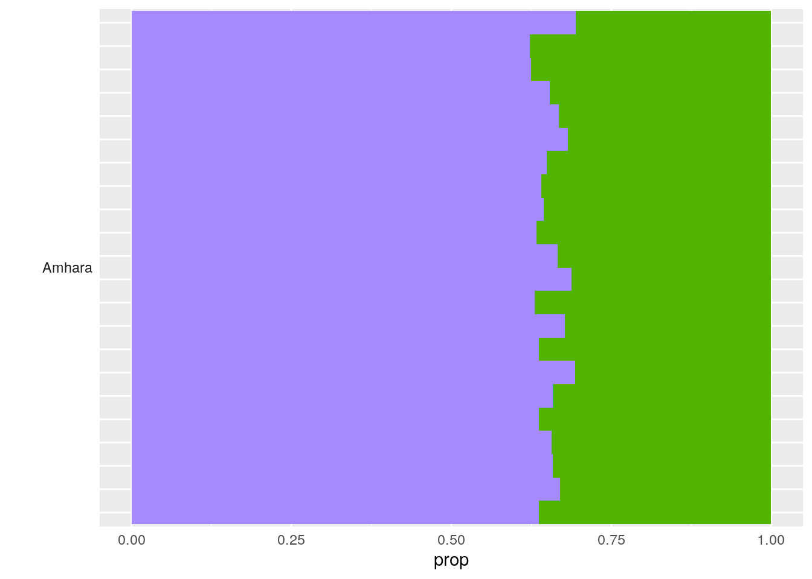
OK now let’s see how that looks for all of the populations. To do so we need to remove our filter.
ancestry_long %>%
ggplot(aes(y=id,
x=prop,
fill = factor(which_k))) +
geom_bar(stat = "identity", width = 1) +
theme(axis.text.y = element_blank(),
legend.position = "none",
axis.ticks = element_blank(),
strip.text.y.left = element_text(angle = 0),
strip.background = element_blank()) +
ylab("") +
facet_col(~pop,
strip.position = "left",
scales = "free_y")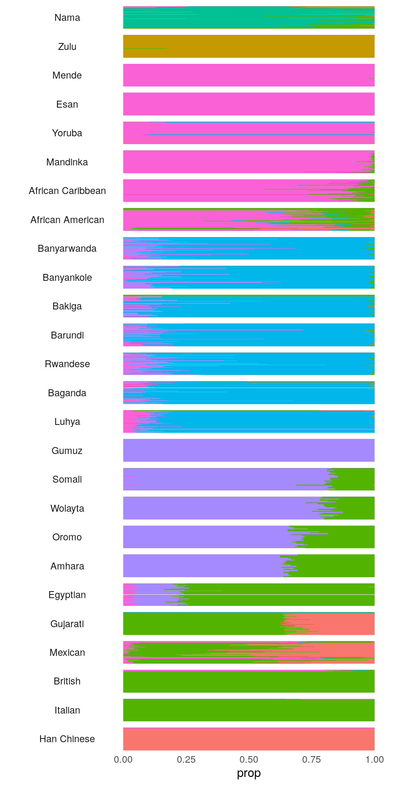
Ok so this looks a bit odd because we need to tell R that is ok for our y axis populations to take up different amounts of space and to have different values for the y axis. We can allow for this using scale = "free_y" to let the y axis vary and space = "free" in the facet_col function to show in a relative manner how many samples are in each population based on the height.
ancestry_long %>%
ggplot(aes(y=id,
x=prop,
fill = factor(which_k))) +
geom_bar(stat = "identity", width = 1) +
theme(axis.text.y = element_blank(),
legend.position = "none",
axis.ticks = element_blank(),
strip.text.y.left = element_text(angle = 0),
strip.background = element_blank()) +
ylab("") +
facet_col(~pop,
strip.position = "left",
scales = "free_y",
space = "free")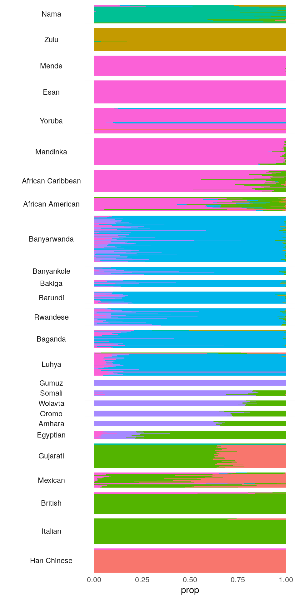
Now let’s take a look at the figure we are trying to replicate again.
Looks like the major thing left now is the color. We can adjust it and make it match by using something called hex codes. These are very specific codes for colors. We can use the scale_fill_manual() function to color each of our clusters with the colors used in the original plot. We already figured out what these were, but you can check them using websites like https://imagecolorpicker.com/ to identify the original color hex codes. We have also figured out which k matches which color by trying this out a bit, but here we add this to our plot code.
ancestry_long %>%
ggplot(aes(y=id,
x=prop,
fill = factor(which_k))) +
geom_bar(stat = "identity", width = 1) +
theme(axis.text.y = element_blank(),
legend.position = "none",
axis.ticks = element_blank(),
strip.text.y.left = element_text(angle = 0),
strip.background = element_blank()) +
ylab("") +
facet_col(~pop,
strip.position = "left",
scales = "free_y",
space = "free")+
scale_fill_manual(breaks = c("k6", "k7", "k1", "k4", "k5", "k3", "k2"),
values = c("#2B284B", "#FFE6AD", "#30A9E1", "#056EB5", "#2BA06A", "#EC5D25", "#A41252"))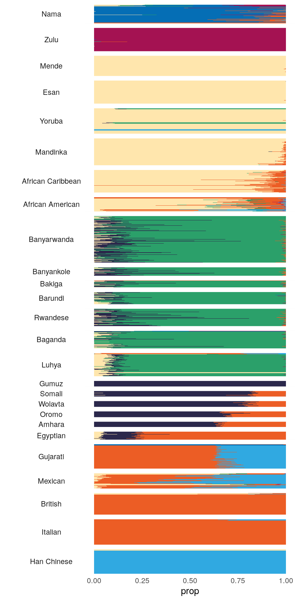
Finally, it looks like our clusters are in reverse order. We can fix that with the group argument of ggplot and group our plot by population.
ancestry_long %>%
ggplot(aes(y=id,
x=prop,
fill = factor(which_k),
group = pop)) +
geom_bar(stat = "identity", width = 1) +
theme(axis.text.y = element_blank(),
legend.position = "none",
axis.ticks = element_blank(),
strip.text.y.left = element_text(angle = 0),
strip.background = element_blank()) +
ylab("") +
facet_col(~pop,
strip.position = "left",
scales = "free_y",
space = "free")+
scale_fill_manual(breaks = c("k6", "k7", "k1", "k4", "k5", "k3", "k2"),
values = c("#2B284B", "#FFE6AD", "#30A9E1", "#056EB5", "#2BA06A", "#EC5D25", "#A41252"))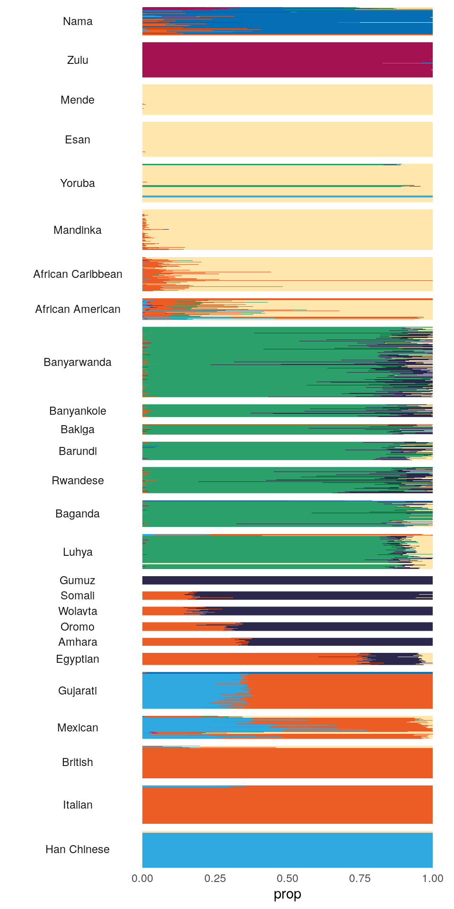
We took this a step further to add the majority cluster column for the geographical regions that was shown in the original figure. Click here to learn how we did this.
To do this we need to figure out what the top k cluster is for each population and region.
First let’s save our original plot to an object so we can refer to it and add our new plot to it. Let’s call it plot1.
plot1 <- ancestry_long %>%
ggplot(aes(y=id,
x=prop,
fill = factor(which_k),
group = pop)) +
geom_bar(stat = "identity", width = 1) +
theme(axis.text.y = element_blank(),
legend.position = "none",
axis.ticks = element_blank(),
strip.text.y.left = element_text(angle = 0),
strip.background = element_blank()) +
ylab("") +
facet_col(~pop,
strip.position = "left",
scales = "free_y",
space = "free")+
scale_fill_manual(breaks = c("k6", "k7", "k1", "k4", "k5", "k3", "k2"),
values = c("#2B284B", "#FFE6AD", "#30A9E1", "#056EB5", "#2BA06A", "#EC5D25", "#A41252"))
plot1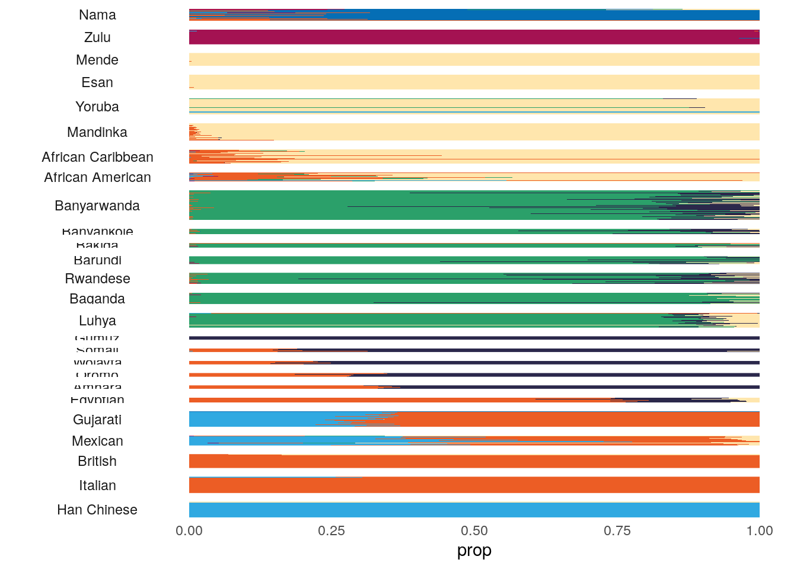
Next let’s make a new dataset that indicates the top k for each population.
First let’s grab just the columns with the population and id information for each rows and set that aside. Let’s make a new column that contains row IDs so we can match this up with what we will do next. We will use the rowid_to_column function from the tibble package of the tidyverse. Let’s call this row_pop_info
ancestry_props_temp %>%
rowid_to_column() # creates a new column called rowid# A tibble: 1,913 × 10
rowid pop id k1 k2 k3 k4 k5 k6 k7
<int> <fct> <chr> <dbl> <dbl> <dbl> <dbl> <dbl> <dbl> <dbl>
1 1 Amhara EGAN00001044421 0.00001 0.00001 0.363 0.00001 1e-5 0.637 1e-5
2 2 Amhara EGAN00001044423 0.00001 0.00001 0.330 0.00001 1e-5 0.670 1e-5
3 3 Amhara EGAN00001044424 0.00001 0.00001 0.342 0.00001 1e-5 0.658 1e-5
4 4 Amhara EGAN00001044425 0.00001 0.00001 0.343 0.00001 1e-5 0.657 1e-5
5 5 Amhara EGAN00001044426 0.00001 0.00001 0.363 0.00001 1e-5 0.637 1e-5
6 6 Amhara EGAN00001044427 0.00001 0.00001 0.341 0.00001 1e-5 0.659 1e-5
7 7 Amhara EGAN00001044428 0.00001 0.00001 0.306 0.00001 1e-5 0.693 1e-5
8 8 Amhara EGAN00001044429 0.00001 0.00001 0.363 0.00001 1e-5 0.637 1e-5
9 9 Amhara EGAN00001044430 0.00001 0.00001 0.323 0.00001 1e-5 0.677 1e-5
10 10 Amhara EGAN00001044431 0.00001 0.00001 0.370 0.00001 1e-5 0.630 1e-5
# ℹ 1,903 more rowsThen we will pivot our columns to be what is “longer” like we did before using the pivot_longer() function. We want to keep our rowid, pop, and id columns so we specify to skip those in the pivot with the !, then we assign our new name column to be called k_name and the new values column to be called prop.
ancestry_props_temp %>%
rowid_to_column() %>%
pivot_longer(!c(rowid, pop, id),
names_to = "k_name",
values_to = "prop")# A tibble: 13,391 × 5
rowid pop id k_name prop
<int> <fct> <chr> <chr> <dbl>
1 1 Amhara EGAN00001044421 k1 0.00001
2 1 Amhara EGAN00001044421 k2 0.00001
3 1 Amhara EGAN00001044421 k3 0.363
4 1 Amhara EGAN00001044421 k4 0.00001
5 1 Amhara EGAN00001044421 k5 0.00001
6 1 Amhara EGAN00001044421 k6 0.637
7 1 Amhara EGAN00001044421 k7 0.00001
8 2 Amhara EGAN00001044423 k1 0.00001
9 2 Amhara EGAN00001044423 k2 0.00001
10 2 Amhara EGAN00001044423 k3 0.330
# ℹ 13,381 more rowsAs you can see wee have the same rowid value repeated now that the data is long because we have made a new row now for each of the cluster column proportion values.
Next, we use the group_by function to tell R how to deal with subsequent steps - we want the next steps to be done on a group-wise basis for all the unique values of the rowid column. We want to grab the max proportion value and only keep those rows, so we use the slice_max function for that. We then remove the grouping with ungroup() so that we don’t keep our grouping for later steps. This helps us see the max proportion for the clusters for each individual.
for_plot2 <- ancestry_props_temp %>%
rowid_to_column() %>%
pivot_longer(!c(rowid, pop, id),
names_to = "k_name",
values_to = "prop") %>%
group_by(rowid) %>%
slice_max(prop) %>%
ungroup()
for_plot2# A tibble: 1,913 × 5
rowid pop id k_name prop
<int> <fct> <chr> <chr> <dbl>
1 1 Amhara EGAN00001044421 k6 0.637
2 2 Amhara EGAN00001044423 k6 0.670
3 3 Amhara EGAN00001044424 k6 0.658
4 4 Amhara EGAN00001044425 k6 0.657
5 5 Amhara EGAN00001044426 k6 0.637
6 6 Amhara EGAN00001044427 k6 0.659
7 7 Amhara EGAN00001044428 k6 0.693
8 8 Amhara EGAN00001044429 k6 0.637
9 9 Amhara EGAN00001044430 k6 0.677
10 10 Amhara EGAN00001044431 k6 0.630
# ℹ 1,903 more rowsNice! let’s check what this did, we can use the count function to look at the number of times we see a max cluster name for each population. We are aiming to have one unique cluster for each population.
count(for_plot2, pop, k_name) %>% print(n = 26)# A tibble: 50 × 3
pop k_name n
<fct> <chr> <int>
1 Nama k2 3
2 Nama k3 3
3 Nama k4 69
4 Nama k7 4
5 Zulu k2 98
6 Mende k7 85
7 Esan k7 97
8 Yoruba k1 5
9 Yoruba k5 10
10 Yoruba k7 93
11 Mandinka k7 113
12 African Caribbean k3 1
13 African Caribbean k7 95
14 African American k1 3
15 African American k3 10
16 African American k7 47
17 Banyarwanda k5 188
18 Banyarwanda k6 8
19 Banyankole k5 34
20 Banyankole k6 2
21 Bakiga k3 2
22 Bakiga k5 27
23 Bakiga k6 1
24 Barundi k5 49
25 Barundi k6 2
26 Rwandese k5 69
# ℹ 24 more rowsLooks like we have some duplicates. Let’s find the more common maximum cluster across the individuals for a given population. We can do basically the same process as before, but this time we will group by the pop column. We will also start with the table made from the count function.
max_k <- count(for_plot2, pop, k_name) %>%
group_by(pop) %>%
slice_max(n) %>%
ungroup()
max_k# A tibble: 26 × 3
pop k_name n
<fct> <chr> <int>
1 Nama k4 69
2 Zulu k2 98
3 Mende k7 85
4 Esan k7 97
5 Yoruba k7 93
6 Mandinka k7 113
7 African Caribbean k7 95
8 African American k7 47
9 Banyarwanda k5 188
10 Banyankole k5 34
# ℹ 16 more rowsNice! Now let’s rename our column to be a bit more clear, let’s call it max_k_for_pop because it indicates what was typically the cluster with the highest proportion for individuals in that population.
max_k <- max_k %>% rename(max_k_for_pop = k_name)
max_k# A tibble: 26 × 3
pop max_k_for_pop n
<fct> <chr> <int>
1 Nama k4 69
2 Zulu k2 98
3 Mende k7 85
4 Esan k7 97
5 Yoruba k7 93
6 Mandinka k7 113
7 African Caribbean k7 95
8 African American k7 47
9 Banyarwanda k5 188
10 Banyankole k5 34
# ℹ 16 more rowsNow let’s join this data with our original data so that we can make our plot with this additional side plot.
for_plot2 <- full_join(ancestry_props, max_k)Joining with `by = join_by(pop)`for_plot2# A tibble: 1,913 × 11
pop id k1 k2 k3 k4 k5 k6 k7 max_k_for_pop n
<fct> <chr> <dbl> <dbl> <dbl> <dbl> <dbl> <dbl> <dbl> <chr> <int>
1 Amhara EGAN000… 1e-5 1e-5 0.363 1e-5 1e-5 0.637 1e-5 k6 22
2 Amhara EGAN000… 1e-5 1e-5 0.330 1e-5 1e-5 0.670 1e-5 k6 22
3 Amhara EGAN000… 1e-5 1e-5 0.342 1e-5 1e-5 0.658 1e-5 k6 22
4 Amhara EGAN000… 1e-5 1e-5 0.343 1e-5 1e-5 0.657 1e-5 k6 22
5 Amhara EGAN000… 1e-5 1e-5 0.363 1e-5 1e-5 0.637 1e-5 k6 22
6 Amhara EGAN000… 1e-5 1e-5 0.341 1e-5 1e-5 0.659 1e-5 k6 22
7 Amhara EGAN000… 1e-5 1e-5 0.306 1e-5 1e-5 0.693 1e-5 k6 22
8 Amhara EGAN000… 1e-5 1e-5 0.363 1e-5 1e-5 0.637 1e-5 k6 22
9 Amhara EGAN000… 1e-5 1e-5 0.323 1e-5 1e-5 0.677 1e-5 k6 22
10 Amhara EGAN000… 1e-5 1e-5 0.370 1e-5 1e-5 0.630 1e-5 k6 22
# ℹ 1,903 more rowsNow, let’s plot this.
To make this side plot, we will use a similar method as before, we want the same colors for example. Here we will fill this plot with the color that corresponds to the cluster that was typically the highest for the population.
plot2 <- for_plot2 %>%
ggplot(aes(x = -1,
y = row.names(.),
fill = max_k_for_pop)) +
geom_col(width=1) +
facet_col(~pop,
scales = "free_y",
space = "free"
) +
theme_bw() +
theme(axis.text = element_blank(),
axis.ticks = element_blank(),
legend.position = "none",
strip.background = element_blank(),
strip.text.x = element_blank()) +
xlab("") +
ylab("") +
xlim(c(-1,0)) +
scale_fill_manual(breaks = c("k6", "k7", "k1", "k4", "k5", "k3", "k2"),
values = c("#2B284B", "#FFE6AD", "#30A9E1", "#056EB5", "#2BA06A", "#EC5D25", "#A41252"))Now let’s put our plots together. We can do so using the patchwork package. This allows us to combine plots with the plus sign. We can also specify how much width each should take up with the plot_layout() function.
plot1 + plot2 +
plot_layout(widths = c(5,0.5), heights=c(12))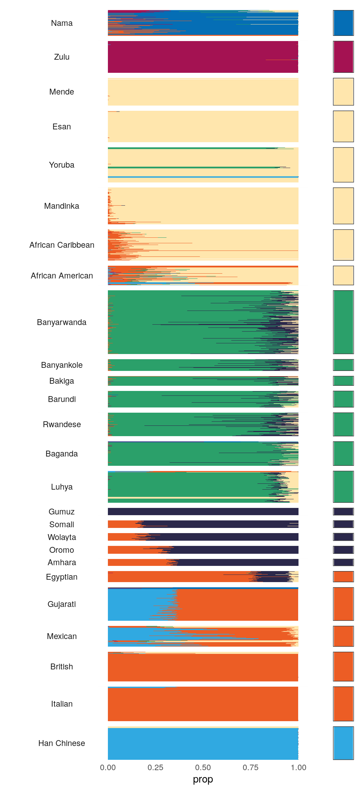
plot1 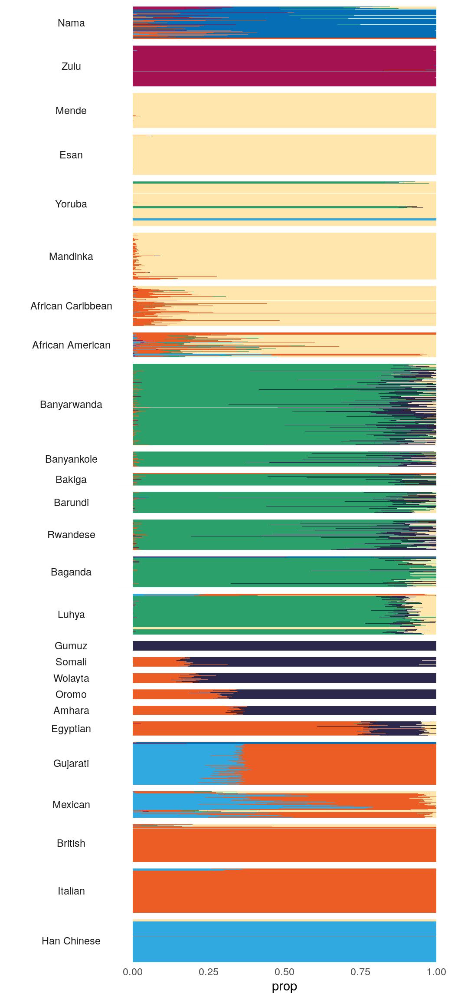
Now we will use the imported data to make a plot like the one in the paper.
- Navigate to the original “ADMIXTURE_ancestry_props” sheet if you are not already there.
- Select Columns A-I (the original data we imported).
- Click the “Insert” menu option, then “Chart”.
Google Sheets will guess on what kind of chart you want and add it. It’s going to look like a bar graph of sorts with thin, vertical strips of color representing the estimated ancestry proportions. The different colors represent the different ancestry clusters (k1, k2, etc.). Along the x-axis each sample is represented uniquely and labeled with their population (though not every sample is labeled). And there’s a white bar in the middle with the sample IDs.
We will explore the “Setup” of this chart and “Customize” its appearance a little.
Double click on the chart and the “Chart editor” panel will be opened on the right-hand side of the screen.
- Notice that the “Chart type” is specified as “Column chart” which is we want. Google Sheets guessed well (mostly). However, we want stacking, and “Stacking” is set to “None” currently. Right now it appears that the white we see in the chart is because it’s plotting each cluster for each sample with their own vertical line. With stacking, each bar / vertical line is split into colored segments to show how different sub-categories (the colors) contribute to the overall total. So without stacking, each bar will show some value between 0 and 1 and multiple bars (next to each other) will be needed to show the values for all of the sub-categories within one sample ID. With stacking, only one bar is needed for each sample ID and every bar will span the full 0 to 1 of the axis, with changes in color representing different proportions / values of the different sub-categories.
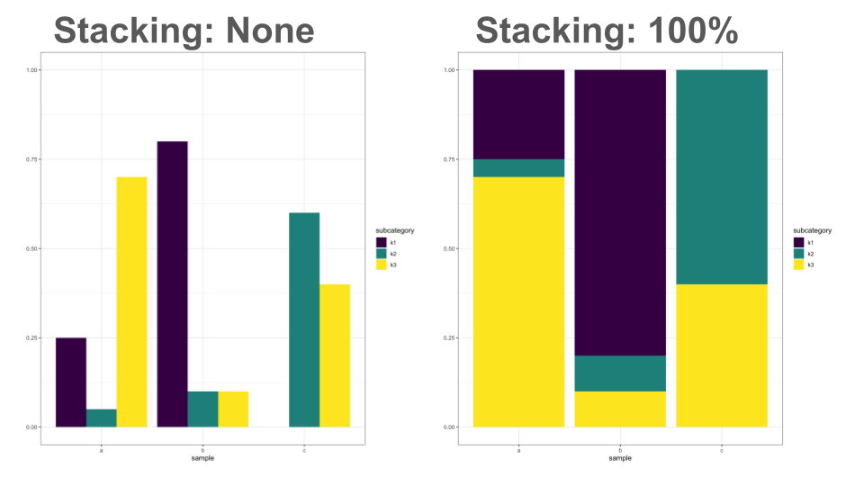
- Switch the “Stacking” selection from “None” to “100%”. Now the vertical white stripes are not visible in the chart and the Chart type was automatically updated to “100% stacked column chart”. Every sample has a single vertical line where the proportions for each of the ancestry clusters is represented in that vertical line.
- The X-axis shows “pop” with an additional label for “id”. Click the circled “x” next to the “id” label to remove it. Now the chart doesn’t have that white bar in the middle with the sample IDs.
- If you click the “Aggregate” checkbox, instead of plotting a separate vertical line for each sample, it will aggregate the data for all samples in a given “pop” (by default summing but can switch to averaging) and plot a single bar for each population. While this is cool to see, it’s not what the commentary’s plot looks like, so don’t leave the “Aggregate” option checked.
- The “Series” section lists k1, k2, k3, k4, k5, k6, and k7 all as their own series.
We can customize the plot to appear closer to the original plot.
- Click the “Customize” tab of the Chart editor panel.
- Under “Series”, select “k1” from the dropdown.
- For Fill color, select the plus sign (
+“add a custom color”) and enter #30A9E1 in the “Hex” box. - Click the green “OK” button.
- Using this table to find the appropriate Hex value, repeat the process for the remaining series (k2, k3, k4, k5, k6, and k7).
| Cluster | Hex |
|---|---|
| k2 | #A41252 |
| k3 | #EC5D25 |
| k4 | #056EB5 |
| k5 | #2BA06A |
| k6 | #2B284B |
| k7 | #FFE6AD |
Notice that you can drag the edges of the chart to expand the size of it – making it wider and taller.
For the 3 remaining ways that the plot looks different than the commentary plot, we can discuss what you would do:
- The commentary plot has horizontal lines instead of vertical lines.
- Go back to the “Setup” tab of the “Chart editor”.
- For “Chart type”, scroll down to the “Bar” section and select the furthest right option that shows stacked bars the full width of the plot.
- Back on the Setup tab “Chart type” should say: “100% stacked bar chart”.
- The population order does not match.
- Recreate these graphing steps in the
Testing Sort 2sheet (from the wrangling section). The population order should match at the end of it.
- Populations are named more than once
- There is nothing we can directly do for this plot to fix the issue. However, we can make a separate plot for each population and later combine them. This is a time consuming and repetitive process. For sake of the example, we will do this twice.
- Navigate to the
Testing Filter 1sheet (from the wrangling section). - Create a chart with the data:
- Chart type “100% stacked bar chart”
- For the Y-axis “pop” within the “Setup” tab of the “Chart editor” panel, click the three dots and “Remove” to remove the population labels.
- Update the Series colors in the “Customize” tab
- Add “Amhara” under the “Title text” option of the “Chart & axis titles” section of the “Customize” tab.
- Repeat the filtering process from the Data Wrangling section together with the building the chart process for the “Nama”, “Rwandese”, and “Han Chinese” populations all separately.
If you repeated this process for all 26 populations, you could combine the plots together to more closely recreate the plot from the commentary, but that requires a lot of manual work and repeated steps.
Analysis
Finding the average proportion of each cluster for each population.
Finding the average proportion of each cluster for each population.
Summary
Suggested Homework
Additional Information
Glossary
| Term | Definition |
| ancestry | An individual's personal understanding of their genomic heritage, genealogy, or family history. Often self-reported. |
| chromosome | DNA that is compactly stored by being wound around histone proteins. Found in the nucleus of the cell. Humans have 23 pairs of chromosomes. |
| codon | Stretch of 3 nucleotides in RNA that is "read" during translation -- each codon corresponding to a specific amino acid in the protein product |
| DNA | Double stranded helix ... |
| genes | Elements of DNA that are transcribed into RNA. They ... |
| genome | All of an individual's DNA |
| genomic variation | Differences in DNA sequences or the genomes when comparing individuals either within a population or across different populations. |
| mutation | Changes in the DNA (typically the sequence) that occur due to replication errors and exposure to mutagens (things or substances that cause mutations, such as UV sunlight) |
| nucleotides | The basic building blocks of DNA with 3 components: a nitrogen containing base - Adenine (A), Cytosine (C), Guanine (G), or Thymine (T) + a five-carbon sugar + and a phosphate group |
| protein | Proteins are essential for all living organisms, performing important tasks in the cell. They are important for immune responses, structural support, information transmission, and powering movement. Proteins are complex molecules comprised of a chain of amino acids. The sequence and identity of amino acids impact how a protein folds into its 3D structure and there many different possible structures. Proteins are the result of translation (DNA --> RNA --> Protein). |
| RNA | Single stranded ... RNA is the result of transcription (DNA --> RNA) |
| transcription | The process by which RNA is produced from DNA. |
| translation | The process by which protein is produced from RNA. |
References
Alexander, David H., John Novembre, and Kenneth Lange. 2009. “Fast Model-Based Estimation of Ancestry in Unrelated Individuals.” Genome Research 19 (9): 1655–64. https://doi.org/10.1101/gr.094052.109.
Carlson, Jedidiah, Brenna M. Henn, Dana R. Al-Hindi, and Sohini Ramachandran. 2022. “Counter the Weaponization of Genetics Research by Extremists.” Nature 610 (7932): 444–47. https://doi.org/10.1038/d41586-022-03252-z.
“Genetics Glossary: Genomic Variation.” n.d. https://www.genome.gov/genetics-glossary/Genomic-Variation.
“Intro to Gene Expression (Central Dogma) (Article).” n.d. Khan Academy. https://www.khanacademy.org/science/ap-biology/gene-expression-and-regulation/translation/a/intro-to-gene-expression-central-dogma.
Li, Jun Z., Devin M. Absher, Hua Tang, Audrey M. Southwick, Amanda M. Casto, Sohini Ramachandran, Howard M. Cann, et al. 2008. “Worldwide Human Relationships Inferred from Genome-Wide Patterns of Variation.” Science 319 (5866): 1100–1104. https://doi.org/10.1126/science.1153717.
Nurk, Sergey, Sergey Koren, Arang Rhie, Mikko Rautiainen, Andrey V. Bzikadze, Alla Mikheenko, Mitchell R. Vollger, et al. 2022. “The Complete Sequence of a Human Genome.” Science 376 (6588): 44–53. https://doi.org/10.1126/science.abj6987.
Pathak, Isha, and Bruno Bordoni. 2026. “Genetics, Chromosomes.” In StatPearls. Treasure Island (FL): StatPearls Publishing. http://www.ncbi.nlm.nih.gov/books/NBK557784/.
Tang, Hua, Jie Peng, Pei Wang, and Neil J. Risch. 2005. “Estimation of Individual Admixture: Analytical and Study Design Considerations.” Genetic Epidemiology 28 (4): 289–301. https://doi.org/10.1002/gepi.20064.
Yudell, Michael, Dorothy Roberts, Rob DeSalle, and Sarah Tishkoff. 2016. “Taking Race Out of Human Genetics.” Science 351 (6273): 564–65. https://doi.org/10.1126/science.aac4951.
Helpful Links
Add additional resource links here